<!doctype html>
<html lang="en">
<head>
  <meta charset="utf-8">
  <meta name="viewport" content="width=device-width, initial-scale=1">
  <title>arxiv digest — 2026-06-02</title>
  <style>
:root {
  --bg: #ffffff;
  --fg: #1f2328;
  --muted: #59636e;
  --border: #d0d7de;
  --card: #f6f8fa;
  --link: #0969da;
}
body {
  max-width: 980px;
  margin: 0 auto;
  padding: 2rem 1rem 5rem;
  font-family: -apple-system, BlinkMacSystemFont, "Segoe UI", Helvetica, Arial, sans-serif;
  line-height: 1.55;
  color: var(--fg);
  background: var(--bg);
}
a { color: var(--link); }
img { max-width: 100%; height: auto; }
pre, code { background: var(--card); border-radius: 6px; }
pre { padding: 1rem; overflow-x: auto; }
blockquote { border-left: 4px solid var(--border); padding-left: 1rem; color: var(--muted); }
details { margin: 0.6rem 0; }
summary { cursor: pointer; font-weight: 600; }
.paper-figures-scroll {
  display: flex;
  gap: 1rem;
  overflow-x: auto;
  overscroll-behavior-x: contain;
  padding: 0.75rem 0.25rem 1rem;
  margin: 1rem 0 1.25rem;
  border-top: 1px solid var(--border);
  border-bottom: 1px solid var(--border);
  scroll-snap-type: x proximity;
}
.paper-figure-card {
  flex: 0 0 min(260px, 72vw);
  scroll-snap-align: start;
  background: var(--card);
  border: 1px solid var(--border);
  border-radius: 12px;
  padding: 0.55rem;
}
.paper-figure-card img {
  display: block;
  width: 100%;
  max-height: 240px;
  object-fit: contain;
  background: white;
  border-radius: 8px;
}
.paper-figure-caption {
  display: block;
  margin-top: 0.5rem;
  color: var(--muted);
  font-size: 0.85rem;
}
.figure-strip-hint {
  color: var(--muted);
  font-size: 0.9rem;
  margin-bottom: -0.3rem;
}
</style>
  <!-- MathJax: renders $...$ inline math and $$...$$ display math, plus
       \(...\) and \[...\]. Loaded from the official CDN; works offline
       once cached. Configured to skip code/pre blocks so arxiv IDs that
       look like dollar amounts don't get mangled. -->
  <script>
    window.MathJax = {
      tex: {
        inlineMath: [['$', '$'], ['\\(', '\\)']],
        displayMath: [['$$', '$$'], ['\\[', '\\]']],
        processEscapes: true,
        processEnvironments: true
      },
      options: {
        skipHtmlTags: ['script', 'noscript', 'style', 'textarea', 'pre', 'code'],
        ignoreHtmlClass: 'tex2jax_ignore',
        processHtmlClass: 'tex2jax_process'
      }
    };
  </script>
  <script id="MathJax-script" async
    src="https://cdn.jsdelivr.net/npm/mathjax@3/es5/tex-chtml.js"></script>
</head>
<body>
<header style="background-color: #333; color: white; padding: 15px; margin-bottom: 20px;">
  <h1 style="margin: 0; font-size: 24px;">
    <a href="https://ochelpan.github.io/arXiv_clean/" style="color: white; text-decoration: none;">Main</a>
  </h1>
</header>

<h1>Daily arXiv Report</h1>

<hr>
<p>
<a href="index.html">← Index</a>
 · <a href="papers_03.html">← Previous</a> · <a href="papers_05.html">Next →</a>
</p>
<hr>

<h2>Papers 61–80</h2>
<p><a id="paper-2606.02446"></a></p>
<h3 id="cumulant-dynamics-in-finite-memory-diffusion"><a href="http://arxiv.org/abs/2606.02446v1">Cumulant dynamics in finite-memory diffusion</a></h3>
<p><strong>Authors:</strong> Navid Abbasi, Xin An, Shanjin Wu<br>
<strong>Type:</strong> theory · <strong>Category:</strong> statistical mechanics · <strong>PDF:</strong> <a href="https://arxiv.org/pdf/2606.02446v1">https://arxiv.org/pdf/2606.02446v1</a><br>
<strong>Analysis basis:</strong> full PDF text, analyzed in chunks
<strong>Topic relevance:</strong> <code>Keldysh / 2PI / non-Gaussian methods</code> <strong>3/5</strong> · <code>non-equilibrium dynamics</code> <strong>3/5</strong> · <code>methods for driven-dissipative</code> <strong>2/5</strong> · <code>correlated / nonlocal dissipation</code> <strong>1/5</strong> · <code>non-equilibrium universality</code> <strong>1/5</strong></p>
<div class="figure-strip-hint">↔ Scroll figures horizontally</div>
<div class="paper-figures-scroll">
<figure class="paper-figure-card">
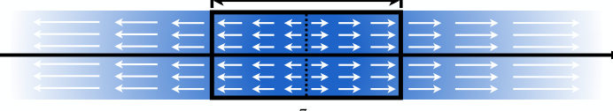
<figcaption class="paper-figure-caption"><b>Fig 1.</b> Figure 1: The mid-rapidity window in the longitudinal direction z at freezeout time. The window (box in the figure) is centered around z0 width ∆. The vertical direction denotes the transverse coordinate that is integrated out, resulting an effective spatial 1D description. The white arrows represent the fluid/particle velocities in Bjorken flow.</figcaption>
</figure>
<figure class="paper-figure-card">
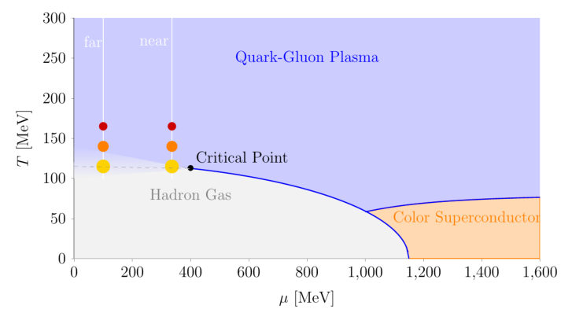
<figcaption class="paper-figure-caption"><b>Fig 2.</b> Figure 2: Schematic illustration of the background trajectories used in this work in the (T, µ) plane of QCD phase diagram. We consider constant-µ trajectories (vertical lines) with a prescribed cooling history T(t). The sequence of colored markers indicates representative times along each trajectory (earlier →later as T decreases). The progressive decreasing color intensity of the marker color encodes the decrease of temperature, while the increasing marker size is a purely schematic indication of the growth of an effective macroscopic domain size as the system evolves. The shaded regions label the phases of the schematic QCD phase diagram, and the lightly shaded band indicates the...</figcaption>
</figure>
<figure class="paper-figure-card">
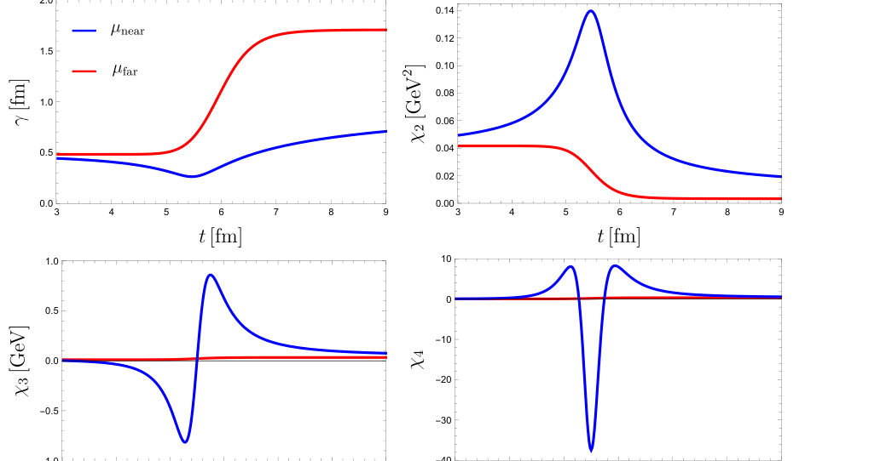
<figcaption class="paper-figure-caption"><b>Fig 3.</b> Figure 3: Time-dependent thermodynamic and transport inputs along the background evolution at fixed baryon chemical potential. Shown are the susceptibilities χ2(t), χ3(t), χ4(t) (from the 3D Ising mapping evaluated along fixed µ) and the diffusion coefficient γ(t) used in the evolution equations of stochastic MC diffusion. Results are displayed for two representative constant-µ trajectories, µ = µfar ≡0.100 GeV (red) and µ = µnear ≡0.366 GeV (blue). The pronounced non-monotonic structures in χn(t) for the larger µ reflect passing close to the critical region (with µc = 0.4 GeV in our parameter choice) and induce a corresponding time dependence of γ(t) through the adopted parametrization.</figcaption>
</figure>
<figure class="paper-figure-card">
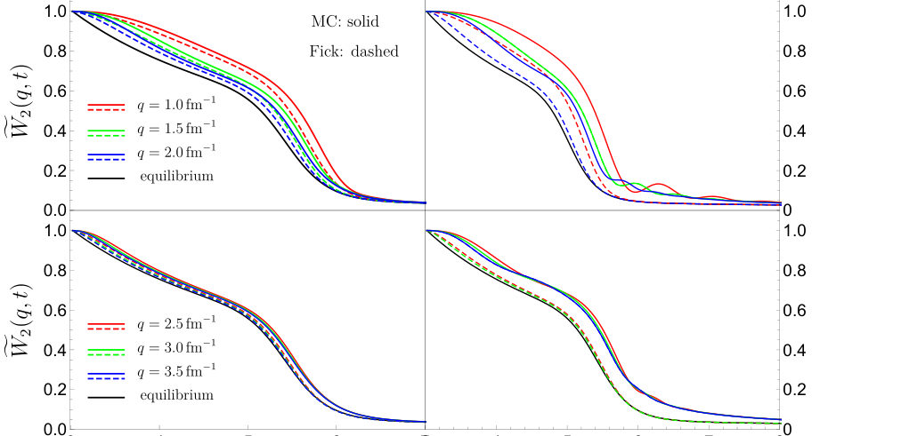
<figcaption class="paper-figure-caption"><b>Fig 4.</b> Figure 4: Time evolution of the normalized two-point Wigner function f W2(q, t) along the constant- µ trajectory at µ = µfar = 0.100 GeV, far from the critical region. Colored solid curves show the MC evolution with finite current-relaxation time, while colored dashed curves show the Fick- ian diffusion limit, τ = 0, for the same values of q. The black curve denotes the instantaneous local-equilibrium value W eq 2 (t), determined by the time-dependent susceptibility along the same background trajectory; it serves as a common reference for both the MC and Fickian evolutions. The left and right columns correspond to τ = 0.2 fm and τ = 1.2 fm, respectively. The upper panels show representative...</figcaption>
</figure>
<figure class="paper-figure-card">
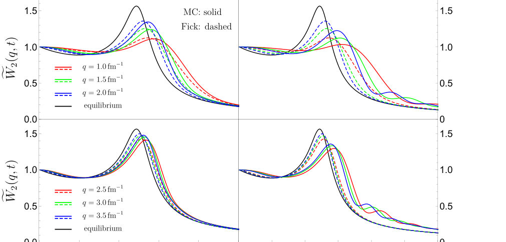
<figcaption class="paper-figure-caption"><b>Fig 5.</b> Figure 5: Same as Fig. 4, but for the constant-µ trajectory at µ = µnear = 0.366 GeV, which passes close to the critical region. Compared with Fig. 4, the near-critical trajectory makes the finite-τ effects more visible, especially for τ = τlarge = 1.2 fm, where the MC curves show both an additional delay and a mild reshaping of the relaxation profile relative to the Fickian baseline.</figcaption>
</figure>
</div>

<p><strong>Summary.</strong> This work develops a theoretical framework to describe how charge fluctuations evolve in the rapidly expanding QGP, moving beyond simple Fickian diffusion. By incorporating finite current relaxation time (Maxwell-Cattaneo diffusion), the authors show that memory effects significantly alter the measurable cumulants. This provides a more accurate diagnostic tool for probing the QCD critical point.</p>
<p><strong>Why it may be interesting.</strong> The rigorous mathematical treatment of memory effects in transport coefficients, leading to modified evolution equations for correlation functions, provides a generalizable framework for non-equilibrium dynamics in complex systems, relevant to open quantum systems modeling.</p>
<details>
<summary>Detailed structure</summary>
<p><strong>Main problem.</strong> The paper addresses the complex, non-equilibrium evolution of fluctuation correlators for conserved charges in the Quark-Gluon Plasma (QGP) fireball, especially when current relaxation effects are significant.</p>
<p><strong>Main result.</strong> Finite current memory, modeled by Maxwell-Cattaneo diffusion, introduces an additional memory effect beyond standard diffusive lag, which can suppress, shift, and reshape the non-monotonic behavior of higher-order cumulants.</p>
<p><strong>Method.</strong> The authors derive closed evolution equations for multi-point Wigner functions, extending the standard Fickian diffusion baseline to include finite current relaxation time scales.</p>
<p><strong>Model / system.</strong> The system is the QGP undergoing rapid expansion, analyzed using theoretical frameworks that extend standard hydrodynamics to incorporate memory effects via the Maxwell-Cattaneo constitutive relation.</p>
<p><strong>Key observables.</strong> Acceptance-dependent cumulants ($C_N(\Delta)$) of conserved charges, and the evolution of multi-point Wigner functions ($W_N$).</p>
<p><strong>Important parameters / regimes.</strong> Current relaxation time ($  au$), diffusive lag time, and the proximity to the QCD critical point.</p>
<p><strong>Assumptions / limitations.</strong> The analysis assumes the ability to derive closed deterministic evolution equations for multi-point correlators and compares results against the $   au  o 0$ (Fickian) limit.</p>
<p><strong>Figures summary.</strong> Figures illustrate the comparison of cumulant evolution under different diffusion models and potentially show background trajectories in the QCD phase diagram.</p>
<p><strong>Paper structure.</strong> The paper builds from establishing the link between cumulants and correlators, deriving the Maxwell-Cattaneo evolution equations for the correlators, and finally numerically comparing the resulting cumulant dynamics against the standard Fickian baseline.</p>
</details>
<details>
<summary>Abstract</summary>
<p>Fluctuations of conserved charges are among the main proposed signatures of the quantum chromodynamics (QCD) critical point, but their interpretation requires a dynamical description of how fluctuation correlators evolve during the finite lifetime of the quark--gluon plasma (QGP) fireball. The standard baseline for this evolution is Fickian diffusion, in which the diffusive current follows the local density gradient instantaneously. This instantaneous-current limit can miss delayed-response effects when the current-relaxation time becomes comparable to the relaxation time of the relevant fluctuation modes. In this work we extend this baseline to Maxwell--Cattaneo diffusion, where the current relaxes on a finite time scale and therefore retains memory. We derive closed evolution equations for multi-point Wigner functions and convert the freezeout correlators into acceptance-dependent cumulants along representative trajectories in the QCD phase diagram. While Fickian diffusion already causes the correlators to lag behind their instantaneous equilibrium values, finite current relaxation introduces an additional memory effect beyond this diffusive lag. As a result, current memory can suppress, shift, and reshape the non-monotonic behavior of the cumulants relative to both instantaneous equilibrium and Fickian diffusion, with the most visible effects appearing in higher-order cumulants and their ratios.</p>
</details>
<p><sub><a href="#top">↑ back to top</a></sub></p>

<p><a id="paper-2606.00882"></a></p>
<h3 id="high-resolution-study-of-the-2d-annni-model-using-a-two-replica-cluster-algorithm-and-population-annealing"><a href="http://arxiv.org/abs/2606.00882v1">High Resolution Study of the 2D ANNNI Model Using a Two-replica Cluster Algorithm and Population Annealing</a></h3>
<p><strong>Authors:</strong> Shane Keiser, Jon Machta<br>
<strong>Type:</strong> theory · <strong>Category:</strong> statistical mechanics · <strong>PDF:</strong> <a href="https://arxiv.org/pdf/2606.00882v1">https://arxiv.org/pdf/2606.00882v1</a><br>
<strong>Analysis basis:</strong> full PDF text, analyzed in chunks
<strong>Topic relevance:</strong> <code>analog quantum simulation</code> <strong>3/5</strong> · <code>exotic spin models in light-matter</code> <strong>3/5</strong> · <code>methods for driven-dissipative</code> <strong>2/5</strong> · <code>Frenkel-Kontorova</code> <strong>1/5</strong></p>
<div class="figure-strip-hint">↔ Scroll figures horizontally</div>
<div class="paper-figures-scroll">
<figure class="paper-figure-card">
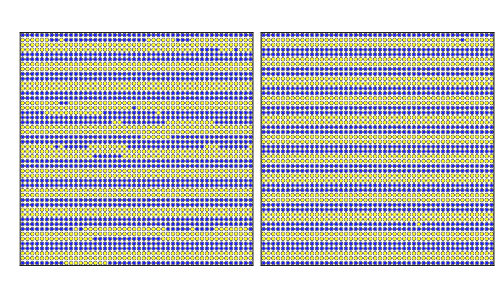
<figcaption class="paper-figure-caption"><b>Fig 1.</b> FIG. 1. Snapshots of two L = 48 replicas at β = 1.09 near the last specific heat peak with coexistence between a configuration in the IC phase (left panel) with four defect lines (k = 11/48) and a configuration in the ⟨2, 2⟩phase (k = 12/48).</figcaption>
</figure>
<figure class="paper-figure-card">
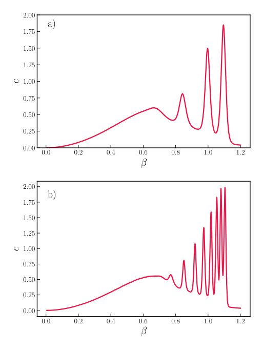
<figcaption class="paper-figure-caption"><b>Fig 2.</b> FIG. 2. Specific heat, c, as a function of β, for sizes (a) L = 48 and (b) L = 128.</figcaption>
</figure>
<figure class="paper-figure-card">
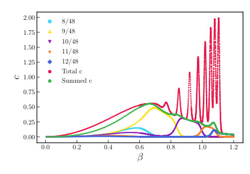
<figcaption class="paper-figure-caption"><b>Fig 3.</b> FIG. 3. Contributions to the specific heat as a function of β for system size L = 48. The total specific heat is the topmost (red) curve. The sum of the specific heats from each wavevec- tor state is second from the top (green). The contributions, ck, to this sum successively appear and then disappear with increasing β. Contributions are shown only for wavevectors k ≥1/6.</figcaption>
</figure>
<figure class="paper-figure-card">
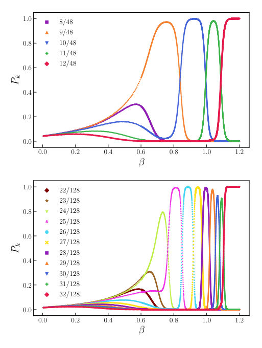
<figcaption class="paper-figure-caption"><b>Fig 4.</b> FIG. 4. Probability Pk, of wavevector state k, (a) L = 48 and (b) L = 128 for wave vectors k ≥1/6.</figcaption>
</figure>
<figure class="paper-figure-card">
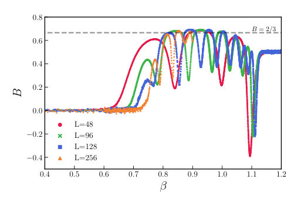
<figcaption class="paper-figure-caption"><b>Fig 5.</b> FIG. 6. Binder cumulant, B, as a function of β for sizes L = 48, 96, 128, and 256. The rise from zero is at larger β for larger L. Results for L = 256 plotted up to β = 0.9.</figcaption>
</figure>
</div>

<p><strong>Summary.</strong> This work investigates the phase transitions of the 2D ANNNI model using sophisticated simulation methods. The authors introduce and validate a powerful combination of Population Annealing and a two-replica cluster algorithm. This new technique successfully resolves the complex physics of the incommensurate floating phase, demonstrating superior equilibration capabilities over existing simulation tools.</p>
<p><strong>Why it may be interesting.</strong> The development and rigorous testing of the two-replica cluster algorithm combined with PA represent a significant advancement in computational techniques for simulating highly frustrated magnetic systems, providing insights applicable to other complex lattice models.</p>
<details>
<summary>Detailed structure</summary>
<p><strong>Main problem.</strong> The study focuses on resolving the sequence of sharp specific heat peaks that characterize the finite-size incommensurate floating (IC) phase in the 2D ANNNI model.</p>
<p><strong>Main result.</strong> The combination of population annealing with a two-replica cluster algorithm proves significantly more effective at equilibrating the system than single-replica or Metropolis methods in the strongly frustrated regime.</p>
<p><strong>Method.</strong> The authors employ advanced Monte Carlo techniques, specifically Population Annealing (PA) coupled with a novel two-replica cluster algorithm, to simulate the system's thermal properties.</p>
<p><strong>Model / system.</strong> The system is the 2D Axial Next-Nearest-Neighbor Ising (ANNNI) model, described by a Hamiltonian involving nearest-neighbor and competing next-nearest-neighbor interactions. The model exhibits multiple phases, including ferromagnetic, ordered $\langle 2, 2 
angle$, and incommensurate floating (IC) phases.</p>
<p><strong>Key observables.</strong> Specific heat ($c$), Binder cumulant of the overlap ($B$), line magnetization ($m_\ell$), and free energy estimators ($ar{F}$).</p>
<p><strong>Important parameters / regimes.</strong> The coupling constant $\kappa$ (which dictates the phase), system size $L$ (tested up to 256), and the inverse temperature $eta$.</p>
<p><strong>Assumptions / limitations.</strong> The analysis relies on assumptions regarding the physical origin of the specific heat peaks (e.g., coexistence of states differing by four three-spin defect lines) and the extrapolation methods used for transition temperatures.</p>
<p><strong>Figures summary.</strong> Figures illustrate snapshots of replicas showing defect lines, comparisons of specific heat peaks across different algorithms (Metropolis vs. TR), and the evolution of the Binder cumulant $B$ across different phases.</p>
<p><strong>Paper structure.</strong> The paper progresses by first establishing the physical model and the need for advanced simulation techniques. It then details the implementation and comparison of various Monte Carlo algorithms (Metropolis, Wolff, Two-replica Cluster) within the framework of Population Annealing. Finally, it analyzes key observables like specific heat and the Binder cumulant to characterize the phase transitions.</p>
</details>
<details>
<summary>Abstract</summary>
<p>The axial next-nearest-neighbor Ising (ANNNI) model in two dimensions is studied using population annealing combined with a two-replica cluster algorithm. We are able to fully resolve the sequence of sharp specific heat peaks that characterize the finite-size incommensurate floating phase. We also show that the two-replica cluster algorithm is much more effective in equilibrating the system than either single-replica cluster methods or the Metropolis algorithm when these are combined with population annealing. We argue that effectiveness of the new algorithm is due to its ability to move groups of defect lines between replicas combined with resampling in population annealing, which removes replicas from the population that have larger numbers of defect lines.</p>
</details>
<p><sub><a href="#top">↑ back to top</a></sub></p>

<p><a id="paper-2606.00696"></a></p>
<h3 id="magnon-bandstructure-and-topology-in-a-periodically-deformed-kagome-lattice-with-dm-interaction"><a href="http://arxiv.org/abs/2606.00696v1">Magnon bandstructure and topology in a periodically deformed Kagome lattice with DM interaction</a></h3>
<p><strong>Authors:</strong> Mohammed Abdullah Hammadi, Mohammed Salman Alsadah, Husam Abdulmajeed Noorwli, Hocine Bahlouli, Michael Vogl<br>
<strong>Type:</strong> theory · <strong>Category:</strong> strongly correlated electrons · <strong>PDF:</strong> <a href="https://arxiv.org/pdf/2606.00696v1">https://arxiv.org/pdf/2606.00696v1</a><br>
<strong>Analysis basis:</strong> full PDF text, analyzed in chunks
<strong>Topic relevance:</strong> <code>analog quantum simulation</code> <strong>3/5</strong> · <code>exotic spin models in light-matter</code> <strong>3/5</strong> · <code>spintronics-quantum-optics interface</code> <strong>3/5</strong></p>
<div class="figure-strip-hint">↔ Scroll figures horizontally</div>
<div class="paper-figures-scroll">
<figure class="paper-figure-card">
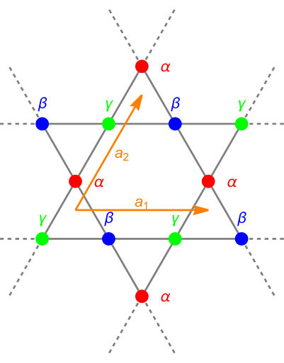
<figcaption class="paper-figure-caption"><b>Fig 1.</b> FIG. 1. Kagome lattice with its three inequivalent sites α,β,γ labeled.</figcaption>
</figure>
<figure class="paper-figure-card">
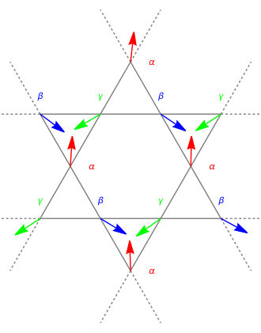
<figcaption class="paper-figure-caption"><b>Fig 2.</b> FIG. 2. Classical ground state configuration of the anti- ferromagnetic case. The spin directions are 120◦separated</figcaption>
</figure>
<figure class="paper-figure-card">
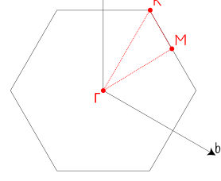
<figcaption class="paper-figure-caption"><b>Fig 3.</b> FIG. 3. Brillouin zone for the undeformed Kagome lattice. ΓMKΓ is a high-symmetry path used in later plots of band structures. Reciprocal lattice vectors that were used to con- struct high symmetry points are given as b1 =  π, −π √</figcaption>
</figure>
<figure class="paper-figure-card">
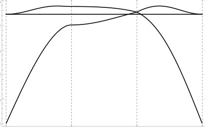
<figcaption class="paper-figure-caption"><b>Fig 4.</b> FIG. 4. Plot (a) shows the band structure of the undeformed Kagome lattice (antiferromagnetic case), where Dz/J = 0.1, while the second graph (b) shows the band structure of the same system but Dz/J = 0.8.</figcaption>
</figure>
<figure class="paper-figure-card">
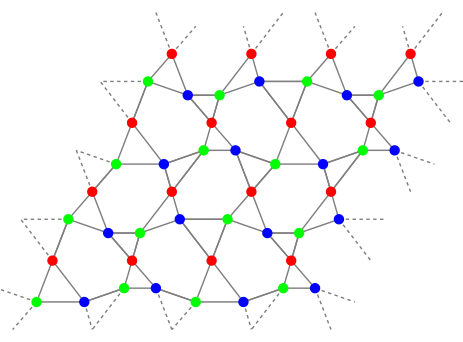
<figcaption class="paper-figure-caption"><b>Fig 5.</b> FIG. 6. Deformed Kagome Lattice for deformation strength C = 0.1.</figcaption>
</figure>
</div>

<p><strong>Summary.</strong> This work theoretically examines how periodic deformations on a Kagome lattice modify the magnon band structure when DM interactions are present. By comparing anti-ferromagnetic and ferromagnetic couplings, the authors show that deformation can induce rich topological features, evidenced by large Chern numbers. This highlights lattice engineering as a key tool for realizing novel topological physics in magnetic materials.</p>
<p><strong>Why it may be interesting.</strong> The explicit connection between geometric deformation, magnetic interactions, and the emergence of non-trivial topology (quantized Chern numbers) provides a powerful mechanism for engineering exotic quantum states in condensed matter magnets.</p>
<details>
<summary>Detailed structure</summary>
<p><strong>Main problem.</strong> The study investigates the magnon band structure and topological properties of a magnetic system subjected to periodic lattice deformations and Dzyaloshinskii-Moriya (DM) interactions.</p>
<p><strong>Main result.</strong> The lattice deformation enriches the band structure, leading to rich topological features, particularly in the ferromagnetic coupling case where Chern numbers can reach $\pm 2$.</p>
<p><strong>Method.</strong> The analysis employs linear spin-wave theory via the Holstein-Primakoff transformation, followed by diagonalizing the resulting bosonic Hamiltonian in momentum space to calculate topological invariants like the Chern number.</p>
<p><strong>Model / system.</strong> The system is a Heisenberg model with DM interaction defined on a Kagome lattice. The model is analyzed on a periodically deformed lattice, which modifies the exchange and DM couplings.</p>
<p><strong>Key observables.</strong> Magnon band structure, Chern numbers ($C_n$), and the presence/closing of band gaps.</p>
<p><strong>Important parameters / regimes.</strong> The nature of coupling (anti-ferromagnetic vs. ferromagnetic), the strength of the DM interaction ($D_z/J$), and the strength of the lattice deformation ($C$).</p>
<p><strong>Assumptions / limitations.</strong> The analysis relies on linear spin-wave theory and a $1/S$ expansion, which are approximations valid under certain conditions.</p>
<p><strong>Figures summary.</strong> Figures illustrate band structures comparing undeformed vs. deformed lattices, and show the dependence of Chern numbers and band gaps on the deformation strength and DM interaction strength.</p>
<p><strong>Paper structure.</strong> The paper systematically analyzes the Hamiltonian, first establishing the theoretical framework using spin-wave theory. It then compares the topological properties in the anti-ferromagnetic (trivial) versus ferromagnetic (rich) regimes, demonstrating how lattice deformation drives topological phase transitions.</p>
</details>
<details>
<summary>Abstract</summary>
<p>We study the band structure and topology of magnons for a Heisenberg model with DM interaction on a deformed Kagome lattice. For simplicity, we focus on a periodically deformed lattice with hexagonal symmetry and an enlarged unit cell. This enlarged unit cell gives rise to a richer band structure than in the undeformed case. Analyzing band topology, there is a distinction between the topologically trivial case with anti-ferromagnetic coupling and the topologically rich case with ferromagnetic coupling. In the anti-ferromagnetic case, a spin-space symmetry, also present in the classical ground state, enforces these topologically trivial states. In the ferromagnetic case, this symmetry is spontaneously broken by the classical ground state. Consequently, the band structure also hosts rich topological features. Specifically, we observe many topological transitions and bands with Chern numbers ranging from $+2$ to $-2$, which makes the system richer than in the undeformed case. This emergent rich topological structure demonstrates that deformed magnets can host new and exciting physics.</p>
</details>
<p><sub><a href="#top">↑ back to top</a></sub></p>

<p><a id="paper-2606.02197"></a></p>
<h3 id="quantum-inspired-topographic-stereovision"><a href="http://arxiv.org/abs/2606.02197v1">Quantum-inspired Topographic Stereovision</a></h3>
<p><strong>Authors:</strong> Fanglin Bao, Youfei Xie<br>
<strong>Type:</strong> theory · <strong>Category:</strong> other · <strong>PDF:</strong> <a href="https://arxiv.org/pdf/2606.02197v1">https://arxiv.org/pdf/2606.02197v1</a><br>
<strong>Analysis basis:</strong> full PDF text, analyzed in chunks
<strong>Topic relevance:</strong> <code>interference shaping light</code> <strong>3/5</strong> · <code>quantum optics experiment</code> <strong>3/5</strong> · <code>quantum measurements</code> <strong>2/5</strong> · <code>entanglement &amp; information structure</code> <strong>1/5</strong></p>
<div class="figure-strip-hint">↔ Scroll figures horizontally</div>
<div class="paper-figures-scroll">
<figure class="paper-figure-card">
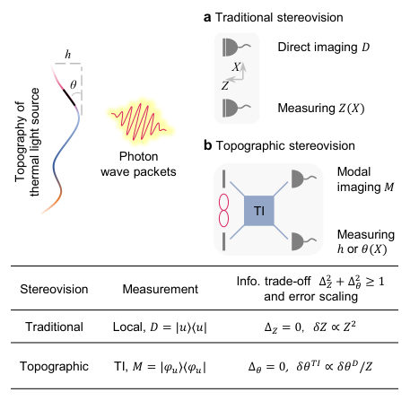
<figcaption class="paper-figure-caption"><b>Fig 1.</b> FIG. 1. Quantum-inspired topographic stereovision with to- pographic interferometer (TI, see Fig. 2). Cross-detector correlations encode unique topographic information beyond triangulation, trading distance precision for improved topo- graphic error scaling. ∆: information regret. u: image plane coordinate. φu: modal profile.</figcaption>
</figure>
<figure class="paper-figure-card">
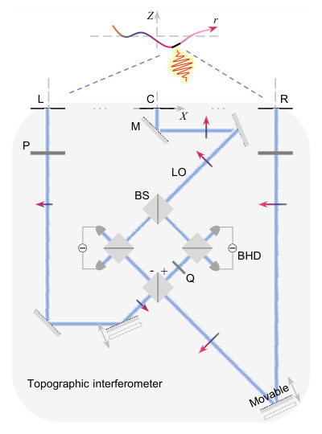
<figcaption class="paper-figure-caption"><b>Fig 2.</b> FIG. 2. Topographic interferometer. A thermal photon emitted by the light source (black line segment) propagates (dashed blue line) to the apparatus and is in a superposition across stereo spatial modes (L: left, R: right), which are fed into the bottom beam splitter (BS) for interference. This pro- cess resembles a Mach-Zehnder interferometer, in which the contrast between two spatial modes encodes the topography of the thermal light source. We introduce a central spatial mode (C) as the local oscillator (LO) for balanced homodyne detection (BHD) to fully extract the topographic information. M: mirror. P: variable phase retarder. Q: quarter-wave phase retarder. Arrows with varying lengths:...</figcaption>
</figure>
</div>

<p><strong>Summary.</strong> This work re-evaluates stereovision, arguing that topography is more fundamental than distance for distant objects. The authors propose a quantum-inspired topographic interferometer that uses quantum correlations to measure topography with precision surpassing classical limits. This establishes a new quantum framework for heat-assisted detection in fields like astronomy.</p>
<p><strong>Why it may be interesting.</strong> It applies advanced quantum estimation theory (Quantum Fisher Information) to a complex, non-equilibrium sensing problem (thermal imaging), providing a quantum-enhanced framework for remote sensing.</p>
<details>
<summary>Detailed structure</summary>
<p><strong>Main problem.</strong> The paper challenges the traditional reliance on triangulation for stereovision, arguing that for distant objects, topography is the more relevant observable than absolute distance.</p>
<p><strong>Main result.</strong> The proposed topographic interferometer enables quantum-enhanced stereovision of thermal sources beyond the Rayleigh limit by exploiting cross-detector correlations.</p>
<p><strong>Method.</strong> It introduces stereo regularization and proposes a topographic interferometer that uses Mach-Zehnder arms and balanced homodyne detection to probe topography.</p>
<p><strong>Model / system.</strong> The system models the optical field from a thermal source in the X-Z plane, analyzing the superposition of photons across stereo spatial modes (L, R) fed into a beam splitter.</p>
<p><strong>Key observables.</strong> Topography ($  heta$), absolute distance ($Z$), disparity ($\delta_q$), and the quantum Fisher information ($K_h$).</p>
<p><strong>Important parameters / regimes.</strong> The analysis focuses on the long-range and weak-source limits ($\epsilon \ll 1$) and the incompatibility quantified by $\Delta^2 Z + \Delta^2 	heta \ge 	ext{constant}$.</p>
<p><strong>Assumptions / limitations.</strong> The method assumes the sub-Rayleigh regime and addresses stereo anisotropies violating emitter-number conservation.</p>
<p><strong>Figures summary.</strong> Figure 1 compares traditional stereovision (measuring Z) versus topographic stereovision.</p>
<p><strong>Paper structure.</strong> The paper first establishes the observable-measurement mismatch, then introduces stereo regularization, and finally details the construction and analysis of the topographic interferometer to achieve quantum-enhanced ranging.</p>
</details>
<details>
<summary>Abstract</summary>
<p>We challenge the long-unquestioned triangulation in distant stereovision, where shape rather than distance is the relevant observable. Our information-regret analysis reveals that the optimal measurements for absolute distance and distance gradient are unexpectedly different and incompatible. To resolve this observable-measurement mismatch, we introduce stereo regularization to address stereo anisotropies that violate prevailing emitter-number conservation, and propose the topographic interferometer, which exploits cross-detector correlations to probe topography without measuring the distance profile. Our interferometer turns parallaxing paths into Mach-Zehnder arms and incorporates a central path as the local oscillator for balanced homodyne detection, saturating the quantum Fisher information with improved topographic error scaling. Our work enables topographic stereovision of thermal sources beyond the Rayleigh limit, thereby establishing a quantum-inspired framework for heat-assisted detection and ranging in remote sensing and astronomy.</p>
</details>
<p><sub><a href="#top">↑ back to top</a></sub></p>

<p><a id="paper-2606.00924"></a></p>
<h3 id="locality-induced-hierarchical-backflow-wavefunctions-for-correlated-fermions"><a href="http://arxiv.org/abs/2606.00924v1">Locality-Induced Hierarchical Backflow Wavefunctions for Correlated Fermions</a></h3>
<p><strong>Authors:</strong> Yu-Tong Zhou, Zheng-Wei Zhou, Wen-Yuan Liu<br>
<strong>Type:</strong> theory · <strong>Category:</strong> strongly correlated electrons · <strong>PDF:</strong> <a href="https://arxiv.org/pdf/2606.00924v1">https://arxiv.org/pdf/2606.00924v1</a><br>
<strong>Analysis basis:</strong> full PDF text, analyzed in chunks
<strong>Topic relevance:</strong> <code>analog quantum simulation</code> <strong>3/5</strong> · <code>Keldysh / 2PI / non-Gaussian methods</code> <strong>2/5</strong> · <code>methods for driven-dissipative</code> <strong>2/5</strong> · <code>entanglement &amp; information structure</code> <strong>1/5</strong></p>
<div class="figure-strip-hint">↔ Scroll figures horizontally</div>
<div class="paper-figures-scroll">
<figure class="paper-figure-card">
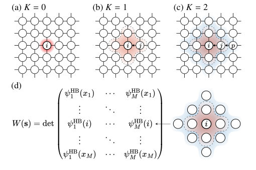
<figcaption class="paper-figure-caption"><b>Fig 1.</b> FIG. 1. Orbital structure of hierarchical backflow (HB) wavefunc- tions at a given site i for different path depths K, illustrating how K controls the range of backflow correlations. (a) K = 0: the orbital de- pends only on site i, corresponding to the Hartree-Fock state with no backflow correlations. (b) K = 1: the orbital at site i depends on its nearby sites j. (c) K = 2: the orbital further includes sites p that are neighbors of j; increasing K systematically enhances the expressive power. (d) Although each orbital depends only on local paths (here shown for K = 2), the Slater determinant couples them to generate many-body correlations in the wavefunction amplitude W(s).</figcaption>
</figure>
<figure class="paper-figure-card">
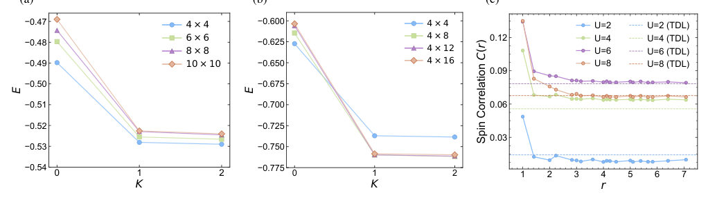
<figcaption class="paper-figure-caption"><b>Fig 2.</b> FIG. 2. Energies of the two-dimensional Hubbard model under PBC with U = 8 as a function of the path depth K (K = 0, 1, 2) at (a) half-filling and (b) nh = 0.125 hole doping. K = 0 corresponds to the Hartree-Fock state. Increasing K systematically lowers the energy. (c) Comparison of staggered spin correlation functions C(r) = (−1)x+y⟨S(0, 0) · S(x, y)⟩as a function of distance r = p</figcaption>
</figure>
<figure class="paper-figure-card">
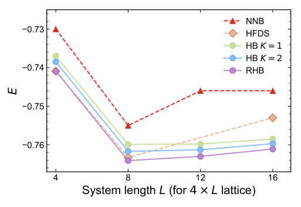
<figcaption class="paper-figure-caption"><b>Fig 3.</b> FIG. 4. Energy comparison with NNB [31] and HFDS [32] for dif- ferent sizes at nh = 0.125 and U = 8, including HB K = 1, K = 2 and the RHB.</figcaption>
</figure>
<figure class="paper-figure-card">
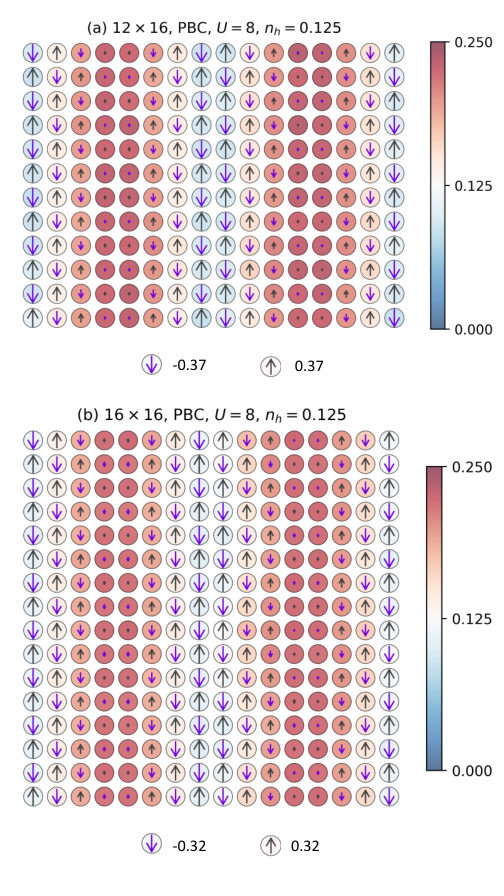
<figcaption class="paper-figure-caption"><b>Fig 4.</b> FIG. 3. The distribution of hole density (color map) and local spin S z moment (arrow length proportional to magnitude) on (a) 12 × 16 and (b) 16 × 16 PBC lattice at nh = 0.125 hole doping with U = 8.</figcaption>
</figure>
<figure class="paper-figure-card">
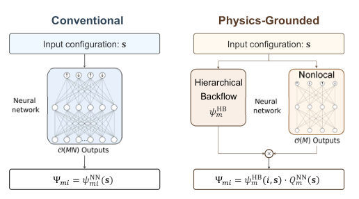
<figcaption class="paper-figure-caption"><b>Fig 5.</b> FIG. 5. Conventional neural network states employ a global archi- tecture (left), whereas our physics-grounded ansatz features a local- nonlocal structure (right). For the same number of determinants, which provides similar expressive power, the number of variational parameters in our representation scales as O(NneuronN) + O(N2), fa- vorable compared to O(NneuronN2) for global architectures.</figcaption>
</figure>
</div>

<p><strong>Summary.</strong> This work introduces the Hierarchical Backflow (HB) wavefunction, a novel, systematically improvable ansatz for correlated fermions, by leveraging the principle of locality. By extending this to the Residual HB (RHB) ansatz, the authors achieve high accuracy in simulating the Hubbard model, demonstrating a powerful, scalable framework for strongly correlated electron physics.</p>
<p><strong>Why it may be interesting.</strong> While focused on condensed matter, the development of a structured, systematically improvable ansatz (HB/RHB) that bridges determinantal forms with neural network representations is highly relevant for developing general-purpose quantum state representations applicable across different physical domains.</p>
<details>
<summary>Detailed structure</summary>
<p><strong>Main problem.</strong> The paper addresses the challenge of simulating and representing the ground state of strongly correlated fermionic systems, such as those described by the Hubbard model, due to the exponentially large Hilbert space.</p>
<p><strong>Main result.</strong> The proposed Hierarchical Backflow (HB) and Residual Hierarchical Backflow (RHB) wavefunctions provide a systematically improvable and highly accurate variational ansatz, achieving results comparable to advanced quantum Monte Carlo methods.</p>
<p><strong>Method.</strong> The core method involves constructing a variational wavefunction based on the backflow concept, which is systematically refined by introducing a path depth parameter K, and further enhanced by a nonlocal neural network factor (RHB).</p>
<p><strong>Model / system.</strong> The study focuses on the two-dimensional Hubbard model, characterized by hopping ($t_{ij}$) and on-site repulsion ($U_{ik}$), applied to various doping levels and system sizes.</p>
<p><strong>Key observables.</strong> Ground-state energy per site, staggered spin correlation function, and local spin/hole density distributions.</p>
<p><strong>Important parameters / regimes.</strong> Path depth K (controlling correlation range), doping level ($n_h$), and interaction strength ($U$).</p>
<p><strong>Assumptions / limitations.</strong> The method relies on the locality principle to organize backflow correlations, and the RHB ansatz uses a two-stage optimization scheme to overcome trapping in the optimization landscape.</p>
<p><strong>Figures summary.</strong> Figures illustrate the orbital structure dependence on K, energy convergence curves showing systematic improvement with K, and spatial maps revealing the formation of stripe phases at finite doping.</p>
<p><strong>Paper structure.</strong> The paper develops the HB ansatz by proposing locality as the organizing principle, systematically improving its expressive power via K. It then extends this to the RHB ansatz, which incorporates nonlocal correlations via a neural network, and validates this structure using advanced optimization techniques and comparisons to established benchmarks.</p>
</details>
<details>
<summary>Abstract</summary>
<p>We show that locality provides a natural principle to hierarchically organize backflow wavefunctions. This leads us to propose a family of variational fermionic states, termed hierarchical backflow (HB) wavefunctions. The expressive power of HB is systematically improvable, controlled by a path depth $K$ which reflects the range of backflow correlations. At half-filling, the HB with $K=1$ already achieves high energy precision, with an accuracy around $0.5\%$ for system sizes from $4\times 4$ to $10\times 10$. At hole doping $n_h=0.125$, the method scales efficiently to $12\times16$ and $16\times16$ systems, and the energy systematically achieves higher accuracy with $K$ increasing, yielding a clear stripe phase. The HB further enables a local-nonlocal decomposition, naturally bridging to neural quantum states, while featuring compact representations and efficient optimization. Our work reveals locality as a natural organizing principle of backflow wavefunctions, opening a new framework with systematic improvability and interpretability for large-scale simulations of correlated fermion systems.</p>
</details>
<p><sub><a href="#top">↑ back to top</a></sub></p>

<p><a id="paper-2606.02420"></a></p>
<h3 id="quenching-of-nonrelativistic-p-wave-spin-splitting-by-c-f-decoupling-in-ceniaso"><a href="http://arxiv.org/abs/2606.02420v1">Quenching of Nonrelativistic p-Wave Spin Splitting by c-f Decoupling in CeNiAsO</a></h3>
<p><strong>Authors:</strong> Xinnuo Zhang, Zhicheng Jiang, Shibo Shen, Jian Yuan, Junseo Yoo, Changyoung Kim, Mao Ye, Jishan Liu, Zhengtai Liu, Yanfeng Guo, Yilin Wang, Dawei Shen<br>
<strong>Type:</strong> both · <strong>Category:</strong> strongly correlated electrons · <strong>PDF:</strong> <a href="https://arxiv.org/pdf/2606.02420v1">https://arxiv.org/pdf/2606.02420v1</a><br>
<strong>Analysis basis:</strong> full PDF text, analyzed in chunks
<strong>Topic relevance:</strong> <code>Kondo &amp; dissipative impurity</code> <strong>3/5</strong> · <code>spintronics-quantum-optics interface</code> <strong>3/5</strong> · <code>Keldysh / 2PI / non-Gaussian methods</code> <strong>2/5</strong></p>
<div class="figure-strip-hint">↔ Scroll figures horizontally</div>
<div class="paper-figures-scroll">
<figure class="paper-figure-card">
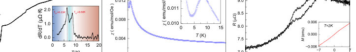
<figcaption class="paper-figure-caption"><b>Fig 1.</b> FIG. 1. (a) Schematic illustration of a universal one-dimensional model generating a p-wave magnet[25], where Jsd represents the local exchange coupling between the itinerant and localized spins on the same lattice site, t denotes the electron hopping matrix element between adjacent sites, and α indicates the propagation trajectory of the spiral configuration. (b) Schematic representation of the spin-polarized Fermi surfaces characteristic of a p-wave magnet, satisfying E(k, σ⊥) = E(−k, −σ⊥). (c) Crystal structure of tetragonal CeNiAsO highlighting the alternating stacking layered profiles. (d) Incommensurate spin- density-wave (SDW) state established below TN1, characterized by a collinear...</figcaption>
</figure>
<figure class="paper-figure-card">
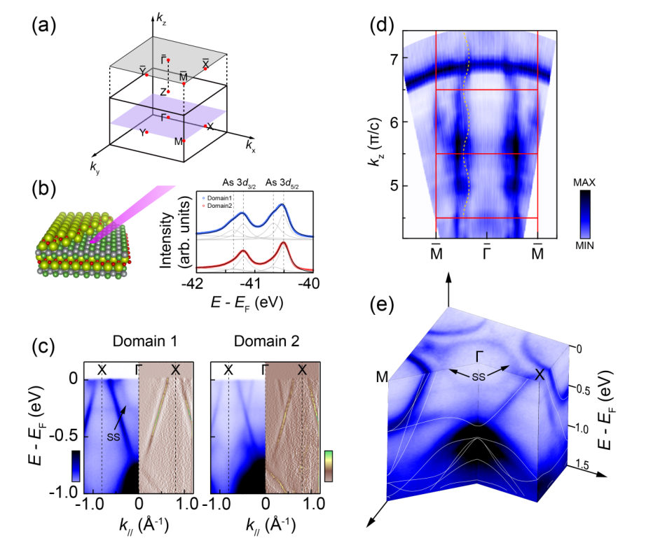
<figcaption class="paper-figure-caption"><b>Fig 2.</b> FIG. 2. (a) Schematic three-dimensional Brillouin zone of CeNiAsO and its projection onto the (001) surface Brillouin zone. (b) Schematic illustration of the cleaved CeNiAsO surface with possible terminations, together with spatially resolved As 3d core-level spectra measured on two representative surface domains. Gray curves denote the Lorentzian components used in the core-level fitting. (c) ARPES intensity plots and corresponding second-derivative images measured along the Γ-X direction on the two surface domains. The arrow marks an additional surface-related band observed on domain 1. (d) Photon-energy- dependent ARPES intensity map along the M-Γ-M direction, plotted as a function of...</figcaption>
</figure>
<figure class="paper-figure-card">
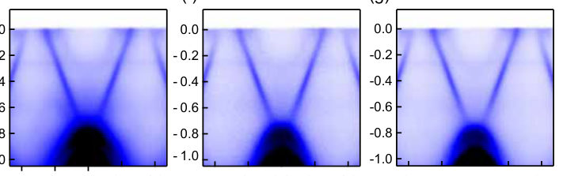
<figcaption class="paper-figure-caption"><b>Fig 3.</b> FIG. 3. (a1)-(a3) Schematic Fermi surfaces expected for the paramagnetic phase, the spin-density-wave phase below TN1, and the proposed p-wave altermagnetic phase below TN2, respectively. Below TN1, the magnetic unit-cell doubling is expected to induce band folding along the Γ-X/Y directions. Below TN2, the proposed p-wave altermagnetic order would further lift the spin degeneracy, as illustrated by the red and blue contours. (b)-(d) ARPES Fermi-surface intensity maps measured at 13.5 K, 7 K, and 5.9 K, respectively. Red dots mark the Γ points, and red squares indicate the projected Brillouin zone. (e)-(g) Corresponding ARPES spectra measured along the Γ-X direction at the same temperatures...</figcaption>
</figure>
<figure class="paper-figure-card">
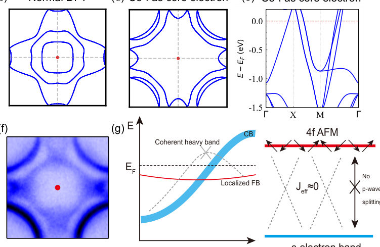
<figcaption class="paper-figure-caption"><b>Fig 4.</b> FIG. 4. Resonant ARPES results and proposed mechanism for the quenching of nonrelativistic p-wave order. (a) ARPES intensity plot measured along the Γ–X direction at 6.5 K using a near-resonant photon energy of 118 eV. The dashed lines mark the boundary of the first Brillouin zone, and the solid line indicates the Fermi level. (b) ARPES intensity plot measured along the Γ–X direction at 6.5 K using a near-resonant photon energy of 122 eV. The vertical dashed lines mark the boundary of the first Brillouin zone, the horizontal dashed lines indicate the two resonant 4f levels, 4f 5/2 and 4f 7/2, and the solid line denotes the Fermi level. (c) Fermi surface at the kz = 0 plane calculated by...</figcaption>
</figure>
</div>

<p><strong>Summary.</strong> This work experimentally investigates the predicted $p$-wave spin splitting in the correlated material CeNiAsO, which is theoretically expected based on magnetic symmetry. The authors report that ARPES measurements fail to detect this splitting, demonstrating that the strong electronic correlations force the Ce 4f electrons into a localized regime. This establishes a key many-body constraint: symmetry alone is insufficient to guarantee spin splitting if electron localization dominates the magnetic coupling.</p>
<p><strong>Why it may be interesting.</strong> The core finding—that symmetry is necessary but not sufficient—provides a crucial lesson for modeling correlated electron systems, particularly those where local moments interact with itinerant carriers, which is relevant to understanding exotic quantum states in condensed matter.</p>
<details>
<summary>Detailed structure</summary>
<p><strong>Main problem.</strong> The paper investigates the theoretical prediction versus experimental observation of nonrelativistic p-wave spin splitting in the heavy-fermion oxypnictide CeNiAsO, challenging symmetry-based predictions for magnetism.</p>
<p><strong>Main result.</strong> Experimental ARPES data show no evidence of the expected spin splitting or band folding across magnetic transitions, suggesting that the Ce 4f electrons remain localized and decouple from the conduction bands.</p>
<p><strong>Method.</strong> The study combines ultra-low-temperature, high-resolution ARPES measurements with theoretical calculations (DFT) comparing different treatments of the f-electrons.</p>
<p><strong>Model / system.</strong> The system is the layered heavy-fermion oxypnictide CeNiAsO, which is studied across magnetic transitions into SDW and coplanar antiferromagnetic states. The physics involves the interplay between itinerant conduction electrons and localized Ce 4f moments.</p>
<p><strong>Key observables.</strong> ARPES band dispersions, Fermi surface mapping, observation of $p$-wave band splitting, and the spectral weight of the Ce 4f electrons.</p>
<p><strong>Important parameters / regimes.</strong> Magnetic transition temperatures ($T_{N1} \approx 9 	ext{ K}$, $T_{N2} \approx 6 	ext{ K}$), the ratio of Kondo coherence temperature ($T^*$) to Néel temperature ($T_N$), and the localized vs. itinerant limit.</p>
<p><strong>Assumptions / limitations.</strong> The initial theoretical framework assumes that extending spin-space group symmetries predicts the splitting, but the experiment tests the validity of this assumption under strong correlations.</p>
<p><strong>Figures summary.</strong> Figures illustrate magnetic transitions via transport measurements, ARPES intensity maps showing the absence of predicted band folding or spin splitting, and theoretical comparisons between different electronic structure treatments.</p>
<p><strong>Paper structure.</strong> The paper establishes the theoretical prediction based on symmetry, presents the experimental ARPES measurements across magnetic phases, analyzes the failure to observe the predicted splitting, and concludes by revising the theoretical understanding to incorporate the many-body constraint imposed by electron localization.</p>
</details>
<details>
<summary>Abstract</summary>
<p>The extending of spin-space group symmetries to coplanar antiferromagnets has predicted the emergence of odd-parity nonrelativistic spin splittings, making the identification of a practical $p$-wave magnet a central pursuit in spintronics. The layered heavy-fermion oxypnictide CeNiAsO has been widely regarded as the prototypical platform to verify this paradigm, as its commensurate coplanar magnetic configuration is theoretically expected to induce a robust $p$-wave band splitting. Here, we investigate the electronic structure of single-crystal CeNiAsO using ultra-low-temperature, high-resolution, and resonant angle-resolved photoemission spectroscopy (ARPES). Across the consecutive magnetic transitions into the ordered phases, our spectroscopic data reveal neither the expected band folding associated with a spin density wave nor any observable $p$-wave band splitting, demonstrating that the conduction bands retain full Kramers degeneracy. By tracking the temperature dependence of the Ce 4$f$ spectral weight via resonant ARPES, we find no evidence of coherent $c-f$ hybridization near the Fermi level within the magnetically ordered states, confirming that the Ce 4$f$ electrons operate in the localized limit. Our findings establish a clear many-body constraint on projecting real-space magnetic symmetries onto momentum-space electronic bands, demonstrating that geometric symmetry classifications constitute a necessary framework but are not a sufficient condition for nonrelativistic spin splittings in the presence of strong electronic correlations.</p>
</details>
<p><sub><a href="#top">↑ back to top</a></sub></p>

<p><a id="paper-2606.00607"></a></p>
<h3 id="qutrit-based-synthetic-three-level-system"><a href="http://arxiv.org/abs/2606.00607v1">Qutrit-based Synthetic Three-Level System</a></h3>
<p><strong>Authors:</strong> Surajit Sen, Tushar Kanti Dey<br>
<strong>Type:</strong> theory · <strong>Category:</strong> other · <strong>PDF:</strong> <a href="https://arxiv.org/pdf/2606.00607v1">https://arxiv.org/pdf/2606.00607v1</a><br>
<strong>Analysis basis:</strong> full PDF text, analyzed in chunks
<strong>Topic relevance:</strong> <code>analog quantum simulation</code> <strong>3/5</strong> · <code>entanglement &amp; information structure</code> <strong>3/5</strong> · <code>Rydberg arrays</code> <strong>1/5</strong> · <code>non-equilibrium dynamics</code> <strong>1/5</strong></p>
<div class="figure-strip-hint">↔ Scroll figures horizontally</div>
<div class="paper-figures-scroll">
<figure class="paper-figure-card">
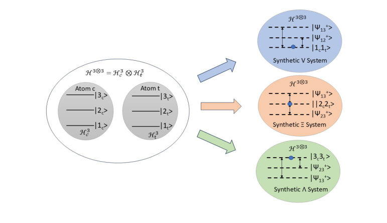
<figcaption class="paper-figure-caption"><b>Fig 1.</b> FIG. 1. Schematic illustration of the mapping of a two-qutrit system onto synthetic V , Ξ and Λ</figcaption>
</figure>
</div>

<p><strong>Summary.</strong> This theoretical work develops an SU(3) framework to engineer synthetic three-level quantum systems using two coupled qutrits. By leveraging the group's algebraic structure, the authors derive effective Hamiltonians for three distinct configurations without relying on problematic Rydberg interactions. Entanglement dynamics are rigorously quantified using novel SU(3) concurrence measures.</p>
<p><strong>Why it may be interesting.</strong> This work provides a powerful, algebraically grounded alternative to conventional Rydberg-based quantum simulation platforms, offering a cleaner theoretical pathway to engineer controlled multi-level quantum dynamics.</p>
<details>
<summary>Detailed structure</summary>
<p><strong>Main problem.</strong> The paper aims to construct synthetic three-level quantum systems using a two-qutrit architecture, specifically avoiding the use of Rydberg states and associated van der Waals interactions.</p>
<p><strong>Main result.</strong> The authors successfully map the system dynamics onto an effective synthetic three-level manifold using the algebraic structure of SU(3) entangled states.</p>
<p><strong>Method.</strong> The analysis involves deriving effective Hamiltonians by examining non-vanishing commutator relations between the free and interaction Hamiltonians, followed by quantifying entanglement using generalized SU(3) concurrence measures.</p>
<p><strong>Model / system.</strong> The model is a two-qutrit system operating in the composite Hilbert space $\mathcal{H}_3 \otimes \mathcal{H}_3$, governed by an SU(3) framework. Three distinct synthetic configurations (VT, TU, UV) are analyzed.</p>
<p><strong>Key observables.</strong> SU(3) I-concurrence and generalized Wootters-type SU(3) concurrence are used to quantify entanglement dynamics.</p>
<p><strong>Important parameters / regimes.</strong> Rabi coupling strengths ($\Omega(x)$) and detuning offsets ($\Delta E_{Mij}$) define the Hamiltonian parameters.</p>
<p><strong>Assumptions / limitations.</strong> The method relies on the algebraic structure of the SU(3) group and assumes the coupling mechanism circumvents the need for Rydberg-mediated interactions.</p>
<p><strong>Figures summary.</strong> Figure 1 schematically illustrates the mapping of the two-qutrit system onto synthetic V, $\Xi$, and $\Lambda$ type three-level configurations.</p>
<p><strong>Paper structure.</strong> The paper first establishes the theoretical framework using SU(3) algebra, then analyzes the dynamics by calculating commutators for the three configurations, derives the effective Hamiltonians for the reduced manifolds, and finally quantifies the entanglement using the specialized concurrence measures.</p>
</details>
<details>
<summary>Abstract</summary>
<p>We present a theoretical framework based on the $SU(3)$ group to construct synthetic three-level configurations from a two-qutrit system consisting of two three-level subsystems. Utilizing its underlying algebraic structure and a set of nine $SU(3)$ entangled states, we show that the system Hamiltonian can be mapped onto an effective synthetic three-level manifold without introducing Rydberg states. We investigate the entanglement dynamics of these synthetic configurations by introducing the $SU(3)$ I-concurrence and a generalized Wootters-type $SU(3)$ concurrence as quantitative measures of entanglement in such system.</p>
</details>
<p><sub><a href="#top">↑ back to top</a></sub></p>

<p><a id="paper-2606.00211"></a></p>
<h3 id="vestigial-nematic-order-at-zero-temperature-in-two-dimensional-frustrated-quantum-antiferromagnets"><a href="http://arxiv.org/abs/2606.00211v1">Vestigial Nematic Order at Zero Temperature in Two-Dimensional Frustrated Quantum Antiferromagnets</a></h3>
<p><strong>Authors:</strong> Matthew C. O'Brien, Eduardo Fradkin<br>
<strong>Type:</strong> theory · <strong>Category:</strong> strongly correlated electrons · <strong>PDF:</strong> <a href="https://arxiv.org/pdf/2606.00211v1">https://arxiv.org/pdf/2606.00211v1</a><br>
<strong>Analysis basis:</strong> full PDF text, analyzed in chunks
<strong>Topic relevance:</strong> <code>analog quantum simulation</code> <strong>3/5</strong> · <code>exotic spin models in light-matter</code> <strong>3/5</strong> · <code>Keldysh / 2PI / non-Gaussian methods</code> <strong>2/5</strong></p>
<div class="figure-strip-hint">↔ Scroll figures horizontally</div>
<div class="paper-figures-scroll">
<figure class="paper-figure-card">
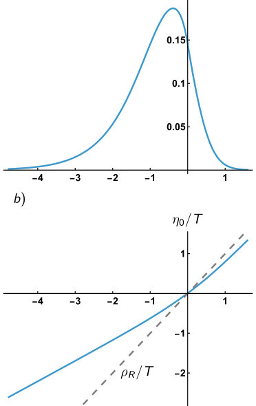
<figcaption class="paper-figure-caption"><b>Fig 1.</b> FIG. 1. (a) The dimensionless inverse correlation length ξ−1√b1/T, where ξ−2 = λ0 for η0 &gt; 0 and ξ−2 = λ0 −η2 0/4bQ for η0 &lt; 0, and (b) the dimensionless physical stiffness η0/T, both as a function of the renormalized stiffness parameter ρR/T, for b2 = 0, µ2b1/T 2 = 1 and γ0/b1 = 2. In (b), the physical stiffness, which is modified by higher derivative inter- actions, is compared to the renormalized stiffness parameter shown by the dashed gray line, which is the stiffness of the theory in the absence of higher derivative interactions.</figcaption>
</figure>
<figure class="paper-figure-card">
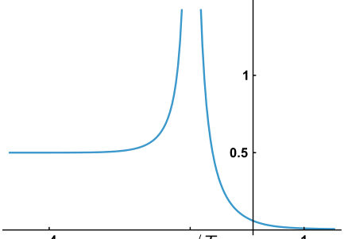
<figcaption class="paper-figure-caption"><b>Fig 2.</b> FIG. 2. Classical nematic susceptibility as a function of ρR/T for b2 = 0, µ2b1/T = 1, γ0/b1 = 2 and γ2/γ0 = −1/8. Here ρcΨ/T ≈−1.2. For ρR &lt; ρcΨ the susceptibility in the nematic phase follows from the Ginzburg-Landau analysis as χΨ = |2Γ(0,2)[0]|−1.</figcaption>
</figure>
<figure class="paper-figure-card">
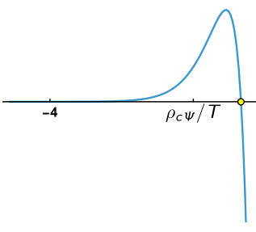
<figcaption class="paper-figure-caption"><b>Fig 3.</b> FIG. 3. Fourth order Ginzburg-Landau coefficient (arbitrary units) as a function of ρR/T for b2 = 0, µ2b1/T = 1, γ0/b1 = 2 and γ2/γ0 = −1/8. Here ρcΨ/T ≈−1.2 and the tricritical point marked with the yellow dot is at ρR/T ≈−0.3.</figcaption>
</figure>
<figure class="paper-figure-card">
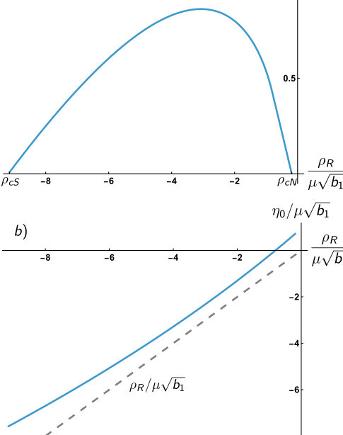
<figcaption class="paper-figure-caption"><b>Fig 4.</b> FIG. 4. (a) The dimensionless mass gap m0/µ, where m2 0 = λ0 for η0 &gt; 0 and m2 0 = λ0 −η2 0/4bQ for η0 &lt; 0. The N´eel and spiral ordering transitions occur where the gap closes at ρcN and ρcS, respectively. (b) The dimensionless physical stiffness η0/µ√b1, both as a function of the dimensionless renormal- ized stiffness parameter ρR/µ√b1, for b2 = 0, gR/√b1 = 8π and γ0/b1 = 2. In (b), the dimensionless physical stiffness is compared to the dimensionless renormalized stiffness param- eter ρR/µ√b1 shown by the dashed gray line.</figcaption>
</figure>
<figure class="paper-figure-card">
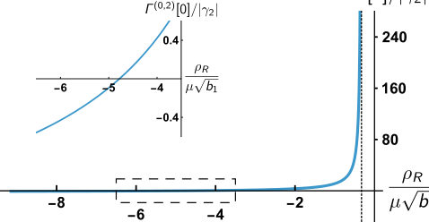
<figcaption class="paper-figure-caption"><b>Fig 5.</b> FIG. 5. Second order coefficient in the Ginzburg-Landau ex- pansion of the effective potential for b2 = 0, gR/√b1 = 8π, γ0/b1 = 2 and γ2/γ0 = −1/8. The inset shows a magnified view of the region in the dashed box. The dotted vertical line indicates the location of the pole in Γ(0,2)[0].</figcaption>
</figure>
</div>

<p><strong>Summary.</strong> This theoretical work investigates the complex phase diagram of a frustrated quantum antiferromagnet using advanced field theory techniques. It reveals that the system can stabilize a vestigial nematic order, even when long-range magnetic order is destroyed by quantum fluctuations. This provides a detailed theoretical framework for understanding symmetry breaking in frustrated quantum magnets.</p>
<p><strong>Why it may be interesting.</strong> The focus on symmetry breaking (nematicity) and quantum fluctuations near a critical point is highly relevant to understanding exotic quantum phases in strongly correlated materials like cuprates.</p>
<details>
<summary>Detailed structure</summary>
<p><strong>Main problem.</strong> The paper addresses the long-standing open problem of determining the quantum phase diagram of the two-dimensional $J_1$-$J_3$ Heisenberg antiferromagnet.</p>
<p><strong>Main result.</strong> The study shows that previously overlooked interactions are crucial for stabilizing a vestigial nematic phase, which persists down to zero temperature, separating different quantum disordered and ordered regimes.</p>
<p><strong>Method.</strong> The analysis employs a semiclassical approach using a continuum nonlinear sigma model effective field theory, enhanced by the nonperturbative large-$N$ technique.</p>
<p><strong>Model / system.</strong> The system is the two-dimensional quantum $J_1$-$J_3$ Heisenberg antiferromagnet on a square lattice, described by a Hamiltonian involving nearest-neighbor ($J_1$) and next-nearest-neighbor ($J_3$) interactions.</p>
<p><strong>Key observables.</strong> Nematic order parameters ($\Psi_1, \Psi_2$), static structure factor $S(q)$, and the correlation length $\xi$.</p>
<p><strong>Important parameters / regimes.</strong> The ratio of coupling constants ($J_1, J_3$), the large-$N$ limit, and the proximity to the classical Lifshitz point.</p>
<p><strong>Assumptions / limitations.</strong> The method is semiclassical and formally exact only in the limit $S 	o \infty$; the analysis often relies on assuming certain order parameters are energetically suppressed ($\Psi_1 \equiv 0$).</p>
<p><strong>Figures summary.</strong> Figures illustrate the phase diagram showing the coexistence of spiral, vestigial nematic, and quantum disordered regions, and plot susceptibilities and structure factors across different parameter regimes.</p>
<p><strong>Paper structure.</strong> The paper builds from introducing the continuum effective field theory, applying the large-$N$ technique to derive the effective potential, and finally solving the resulting saddle-point equations to map out the phase diagram.</p>
</details>
<details>
<summary>Abstract</summary>
<p>The phase diagram of the two-dimensional quantum $J_1$-$J_3$ Heisenberg antiferromagnet on a square lattice is a long-standing open problem. Despite recent advances in numerical techniques for quantum spin models, a detailed analytical theory is still lacking. We address this problem using a semiclassical approach based on a continuum nonlinear sigma model effective field theory, applying the nonperturbative large-$N$ technique to map out the phase diagram and determine the magnetic correlations. We show that previously-overlooked interactions are crucial for stabilizing a vestigial nematic phase, both at finite and zero temperature. Our results reveal that the spontaneous breaking of global symmetries in the $J_1$-$J_3$ model is controlled by the strength of infrared quantum fluctuations which are enhanced by proximity to the classical Lifshitz point.</p>
</details>
<p><sub><a href="#top">↑ back to top</a></sub></p>

<p><a id="paper-2606.01235"></a></p>
<h3 id="interplay-between-quantum-metric-and-hybridized-collective-modes-in-flat-band-superfluids"><a href="http://arxiv.org/abs/2606.01235v1">Interplay between Quantum Metric and Hybridized Collective Modes in Flat-Band Superfluids</a></h3>
<p><strong>Authors:</strong> Yi Liu, Mingyan Wang, Penghui Hu, Yao Lu<br>
<strong>Type:</strong> theory · <strong>Category:</strong> quantum gases · <strong>PDF:</strong> <a href="https://arxiv.org/pdf/2606.01235v1">https://arxiv.org/pdf/2606.01235v1</a><br>
<strong>Analysis basis:</strong> full PDF text, analyzed in chunks
<strong>Topic relevance:</strong> <code>analog quantum simulation</code> <strong>3/5</strong> · <code>Keldysh / 2PI / non-Gaussian methods</code> <strong>2/5</strong> · <code>methods for driven-dissipative</code> <strong>2/5</strong></p>
<div class="figure-strip-hint">↔ Scroll figures horizontally</div>
<div class="paper-figures-scroll">
<figure class="paper-figure-card">
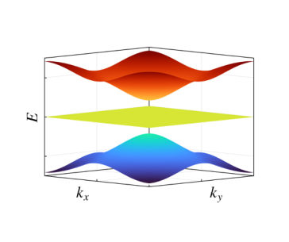
<figcaption class="paper-figure-caption"><b>Fig 1.</b> FIG. 1: Schematic illustration of the normal-state band structure for a prototypical isolated flat-band system.</figcaption>
</figure>
<figure class="paper-figure-card">
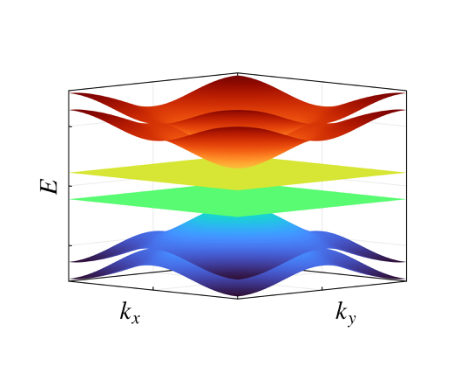
<figcaption class="paper-figure-caption"><b>Fig 2.</b> FIG. 2: Schematic of the 6 × 6 Bogoliubov–de Gennes (BdG) quasiparticle excitation spectrum for the Lieb lattice with a finite chemical potential and a staggered hopping amplitude fixed at δ = 0.3J. The spectrum features a pair of isolated perfectly flat bands separated by a distinct energy gap. (All energies are in units of J, and a = 1.)</figcaption>
</figure>
<figure class="paper-figure-card">
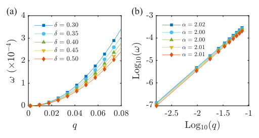
<figcaption class="paper-figure-caption"><b>Fig 3.</b> FIG. 4: Scaling analysis of the collective mode dispersion along the x-direction (q = qˆx). (a) The extracted low-energy dispersion curves ω(q) for various staggered hopping parameters δ. (b) Log-log plot of the dispersion data. The parallel linear fits yield power-law exponents of α ≈2.0, confirming the parabolic nature of the excitations and the absence of a linear term. (The frequency ω is plotted in units of J.)</figcaption>
</figure>
<figure class="paper-figure-card">
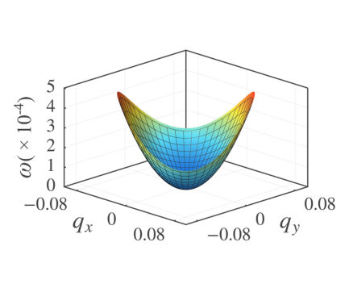
<figcaption class="paper-figure-caption"><b>Fig 4.</b> FIG. 3: The low-energy collective mode dispersion ω(qx, qy), obtained by numerically solving det[M(q, ω)] = 0 for small momenta at a fixed staggered hopping δ = 0.3J. The gapless excitation spectrum forms a parabolic surface. (Energies are in units of J, with a = 1.)</figcaption>
</figure>
<figure class="paper-figure-card">
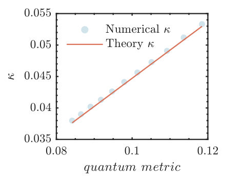
<figcaption class="paper-figure-caption"><b>Fig 5.</b> FIG. 5: Collective mode dispersion curvature κ (evaluated along the qx direction) versus the average normal-state quantum metric under varying staggered hoppings δ. The circular markers represent the data obtained directly from the multi-channel response matrix, while the solid line represents the analytical prediction κ = 2E</figcaption>
</figure>
</div>

<p><strong>Summary.</strong> This theoretical work investigates collective excitations in flat-band superfluids, showing that the mode dispersion is not linear (like conventional superfluids) but quadratic ($\omega \propto q^2$). The key finding is that the curvature of this parabolic dispersion is universally determined by the normal-state quantum metric of the underlying flat band.</p>
<p><strong>Why it may be interesting.</strong> This work provides a rigorous, geometric understanding of superfluid dynamics in highly constrained systems (flat bands), linking macroscopic excitation properties directly to fundamental quantum geometric invariants (the quantum metric).</p>
<details>
<summary>Detailed structure</summary>
<p><strong>Main problem.</strong> To determine the low-energy collective excitation dispersion relation in flat-band superfluids by analyzing the coupled dynamics of pairing, amplitude, and density fluctuations.</p>
<p><strong>Main result.</strong> The collective mode exhibits a quadratic dispersion ($\omega \propto q^2$) at small momenta, and the coefficient governing this curvature is determined by the normal-state quantum metric of the flat band.</p>
<p><strong>Method.</strong> The authors employ a path integral formalism with a Generalized Hubbard-Stratonovich transformation, analyzing the full dynamic response matrix via a multi-channel fluctuation expansion.</p>
<p><strong>Model / system.</strong> The system is a time-reversal symmetric superfluid characterized by an isolated flat band, modeled using a mean-field Hamiltonian projected onto the flat-band subspace.</p>
<p><strong>Key observables.</strong> Collective excitation dispersion relation $\omega(q)$, the quadratic curvature coefficient $\kappa$, and the quantum metric $g_{qq}(k)$.</p>
<p><strong>Important parameters / regimes.</strong> Zero temperature ($T=0$), long-wavelength limit ($q 	o 0$), and the existence of an isolated flat band.</p>
<p><strong>Assumptions / limitations.</strong> The analysis assumes the flat band is energetically well separated from other bands, and that the low-energy dynamics can be captured by projecting onto the degenerate null space of the static response matrix.</p>
<p><strong>Figures summary.</strong> Figures illustrate the schematic band structure, the parabolic nature of the low-energy dispersion ($\omega \propto q^2$), and a direct comparison showing the fitted curvature tracking the theoretical quantum metric.</p>
<p><strong>Paper structure.</strong> The paper progresses from defining the coupled fluctuation dynamics (GHS transformation) to constructing the full dynamic response matrix, solving for the zero-frequency modes, and finally calculating the second-order spatial derivative of the matrix to extract the curvature coefficient.</p>
</details>
<details>
<summary>Abstract</summary>
<p>We investigate collective excitations in flat-band superfluids by incorporating the coupled dynamics of pairing (phase and amplitude) and density fluctuations. We demonstrate that for any time-reversal symmetric superfluid system with an isolated flat band, only a single low-energy collective mode emerges in the long-wavelength limit. In contrast to the linearly dispersive Goldstone mode in conventional superfluids, this hybridized mode is gapless at zero momentum but exhibits a quadratic dispersion ($ω\propto q^2$) at small momenta. Analytically, we reveal that the dispersion coefficient of this collective mode is governed by the normal-state quantum metric of the flat band. These analytical predictions are in excellent agreement with numerical calculations. Our results are universally applicable to any generic $s$-wave flat-band superfluid, provided the flat band is energetically well separated from other dispersive bands.</p>
</details>
<p><sub><a href="#top">↑ back to top</a></sub></p>

<p><a id="paper-2606.02291"></a></p>
<h3 id="is-the-most-random-pattern-random-maximizing-localization-in-a-two-dimensional-lattice-with-engineered-disorder"><a href="http://arxiv.org/abs/2606.02291v1">Is the most random pattern random? Maximizing localization in a two-dimensional lattice with engineered disorder</a></h3>
<p><strong>Authors:</strong> Morgan Berkane, Sahel Ashhab<br>
<strong>Type:</strong> theory · <strong>Category:</strong> disordered systems and neural networks · <strong>PDF:</strong> <a href="https://arxiv.org/pdf/2606.02291v1">https://arxiv.org/pdf/2606.02291v1</a><br>
<strong>Analysis basis:</strong> full PDF text, analyzed in chunks
<strong>Topic relevance:</strong> <code>analog quantum simulation</code> <strong>3/5</strong> · <code>non-equilibrium dynamics</code> <strong>2/5</strong> · <code>entanglement &amp; information structure</code> <strong>1/5</strong> · <code>methods for driven-dissipative</code> <strong>1/5</strong></p>
<div class="figure-strip-hint">↔ Scroll figures horizontally</div>
<div class="paper-figures-scroll">
<figure class="paper-figure-card">
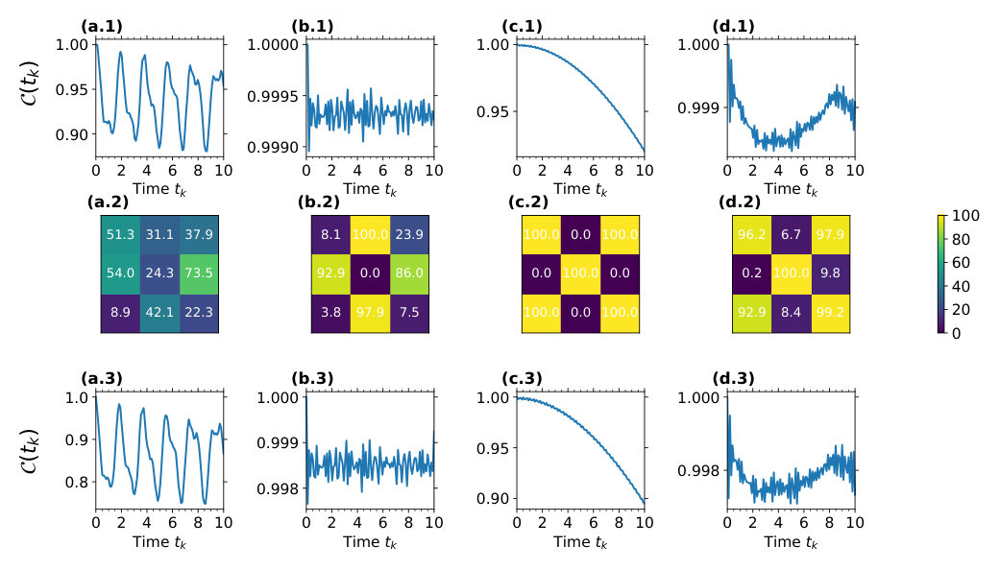
<figcaption class="paper-figure-caption"><b>Fig 1.</b> FIG. 1. Time evolution of the autocorrelation function (Eq. (2)) for different sets of on-site energies Wi on a 3×3 lattice. Panels (a) correspond to random on-site parameters, (b) to optimized lattice, (c) to the perfect chessboard lattice, and (d) to the perturbed chessboard lattice (see text). For each configuration, the upper panels (x.1) show the time dependant autocorrelation function for the single-particle case, the middle panels (x.2) display the corresponding lattice structure, and the lower panels (x.3) present the time dependant autocorrelation function for the FHS. The optimization procedure is performed at the single- particle level by minimizing the cost function defined in...</figcaption>
</figure>
<figure class="paper-figure-card">
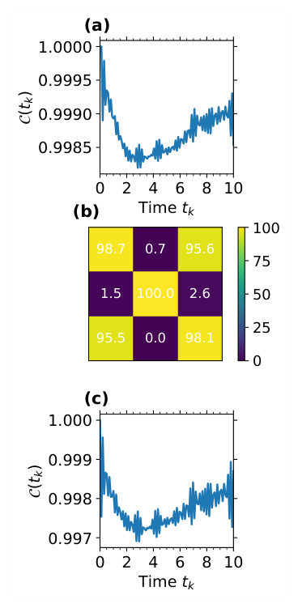
<figcaption class="paper-figure-caption"><b>Fig 2.</b> FIG. 2. Time evolution of the autocorrelation function (Eq. (2)) for different sets of on-site energies Wi on a 3 × 3 lattice. Panel (a) shows the time-dependent autocorrelation function in the full Hilbert space (FHS), panel (b) displays the corresponding lattice, and panel (c) presents the autocor- relation function in the single-particle case. The optimization is performed at the FHS level by minimizing the cost function defined in Eq. (4).</figcaption>
</figure>
<figure class="paper-figure-card">
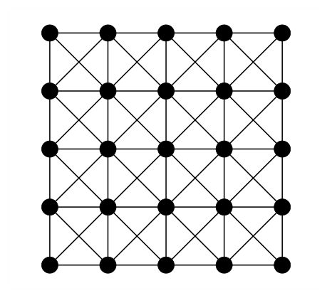
<figcaption class="paper-figure-caption"><b>Fig 3.</b> FIG. 3. Illustration of the effective connectivity of a 5 × 5 lattice to second order in perturbation theory. In addition to nearest-neighbor couplings, second-order processes generate effective next-nearest-neighbor connections, allowing nodes without a direct link to be connected via two-step hopping paths. For clarity, the graph represents the effective connec- tivity induced by these higher-order processes and does not correspond to the bare geometry of the underlying square lat- tice (see text).</figcaption>
</figure>
<figure class="paper-figure-card">
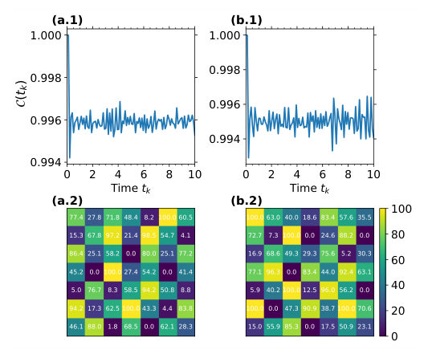
<figcaption class="paper-figure-caption"><b>Fig 4.</b> FIG. 4. Time evolution of the autocorrelation function (Eq. (2)) for a 7 × 7 lattice with on-site energies Wi in the single- particle case. Panel (a) shows the time-dependent autocorrelation function for the optimized lattice obtained by minimizing the cost function defined in Eq. (3), while panel (a.2) displays the corresponding lattice configuration. Panel (b) presents the autocorrelation function obtained from the perturbative optimization based on Eq. (15), and panel (b.2) shows the associated lattice configuration.</figcaption>
</figure>
</div>

<p><strong>Summary.</strong> This work explores engineering disorder in lattice systems to achieve maximal quantum state localization. By optimizing on-site energies, the authors show that engineered patterns outperform random disorder, and crucially, they demonstrate that the optimal single-particle settings can guide the design of highly decoupled qubit processors.</p>
<p><strong>Why it may be interesting.</strong> The methodology of mapping complex many-body localization problems onto simpler, solvable single-particle optimization problems is highly valuable for designing quantum hardware.</p>
<details>
<summary>Detailed structure</summary>
<p><strong>Main problem.</strong> The paper investigates whether engineered disorder can achieve stronger quantum state localization than purely random disorder in lattice systems.</p>
<p><strong>Main result.</strong> Optimizing on-site energies to maximize localization in the single-particle model successfully identifies optimal settings that achieve maximum decoupling in the complex, many-body qubit lattice.</p>
<p><strong>Method.</strong> The authors use optimization techniques (like genetic algorithms) on cost functions derived from autocorrelation functions and perturbation theory to suppress quantum transport.</p>
<p><strong>Model / system.</strong> The study analyzes two models: a single particle on a 2D square lattice using a tight-binding Hamiltonian, and a two-dimensional square qubit lattice relevant for quantum processors.</p>
<p><strong>Key observables.</strong> Site-averaged autocorrelation function C(t) (localization measure) and the cost function L_FHS (for qubit decoupling).</p>
<p><strong>Important parameters / regimes.</strong> On-site energies {W_i}, hopping amplitudes J_ij, and the detuning parameters $\Delta_{ij} = |W_i - W_j|$.</p>
<p><strong>Assumptions / limitations.</strong> The single-particle optimization constraints are assumed to be sufficient to guide the optimization for the exponentially complex full qubit Hilbert space.</p>
<p><strong>Figures summary.</strong> Figures compare the time evolution of the autocorrelation function C(t) for random, optimized, and regular lattice configurations, demonstrating superior localization in the engineered cases.</p>
<p><strong>Paper structure.</strong> The paper progresses from analyzing single-particle localization using cost functions, to applying these concepts to the full qubit lattice dynamics, and finally refining the optimization using perturbation theory to account for higher-order hopping processes.</p>
</details>
<details>
<summary>Abstract</summary>
<p>We investigate localization in two models: a single particle in a two-dimensional square lattice described by the tight binding Hamiltonian, and a two-dimensional square qubit lattice. It is well-known that Anderson localization occurs under suitable conditions in which the system parameters are chosen randomly from some statistical distribution. We propose a situation in which the parameters, specifically the on-site energies, are carefully chosen in such a way that a localization-quantifying parameter is maximized. We demonstrate the optimization procedure with numerical calculations in which the engineered localization significantly exceeds the average localization caused by a random distribution of the on-site energies. We explore the relation between spatial patterns and localization efficiency. Furthermore, we use perturbation theory to gain insight into the localization mechanism and obtain an improved cost function for optimization calculations, leading to enhanced localization in both the single-particle and full Hilbert spaces. Although large-scale simulations for qubit lattices are computationally infeasible, we use small-system simulations to demonstrate that results obtained using the single-particle tight binding model can be adapted to identify optimal settings for qubit lattice systems to achieve maximum decoupling between the qubits, which can be valuable for optimizing the idle-state settings on a quantum processor.</p>
</details>
<p><sub><a href="#top">↑ back to top</a></sub></p>

<p><a id="paper-2606.01262"></a></p>
<h3 id="large-alphabet-set-time-bin-encoded-measurement-device-independent-quantum-key-distribution"><a href="http://arxiv.org/abs/2606.01262v1">Large Alphabet Set Time-bin Encoded Measurement-Device-Independent Quantum Key Distribution</a></h3>
<p><strong>Authors:</strong> Gokul Agasthilingam, Harinee Natarajan, Varun Raghunathan<br>
<strong>Type:</strong> experiment · <strong>Category:</strong> quantum information and computing · <strong>PDF:</strong> <a href="https://arxiv.org/pdf/2606.01262v1">https://arxiv.org/pdf/2606.01262v1</a><br>
<strong>Analysis basis:</strong> full PDF text, analyzed in chunks
<strong>Topic relevance:</strong> <code>QC/QI experiment</code> <strong>3/5</strong> · <code>quantum optics experiment</code> <strong>3/5</strong> · <code>quantum measurements</code> <strong>1/5</strong></p>
<div class="figure-strip-hint">↔ Scroll figures horizontally</div>
<div class="paper-figures-scroll">
<figure class="paper-figure-card">
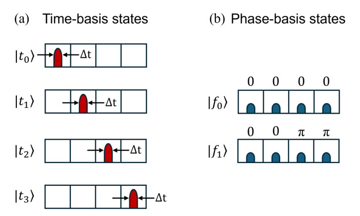
<figcaption class="paper-figure-caption"><b>Fig 1.</b> Figure 1: Illustration of time-bin encoded large alphabet set MDI-QKD with: (a) four encoded Z-basis states {|𝑡(⟩, |𝑡%⟩, |𝑡!⟩, |𝑡)⟩}, and (b) two encoded X-basis states {|𝑓(⟩, |𝑓%⟩}.</figcaption>
</figure>
<figure class="paper-figure-card">
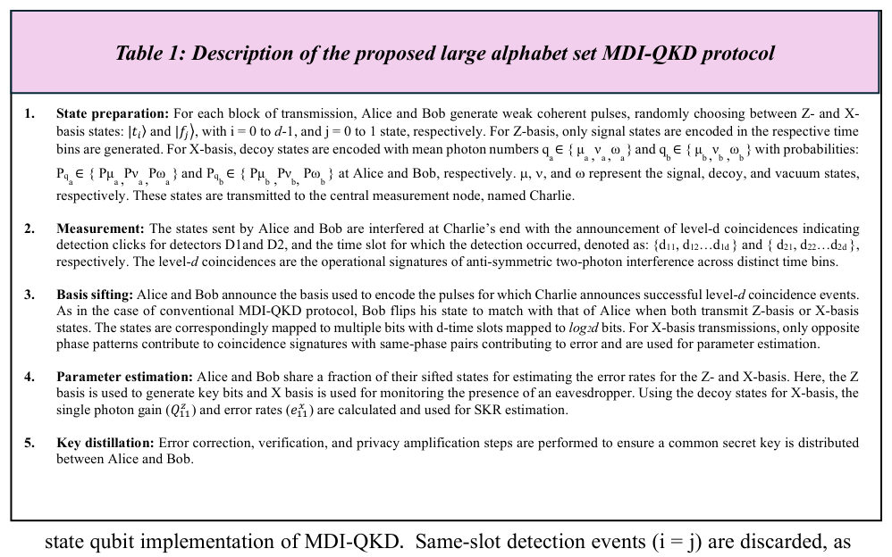
<figcaption class="paper-figure-caption"><b>Fig 2.</b> Figure 2: Illustration of MDI-QKD transmission for four state encoding at Alice and Bob, with coincidence measurements performed at Charlie. The level-d coincidence measurement outcomes correspond to detection events of the form: 7|𝑑%*⟩0𝑑!+18, with clicks at i-th and j-th time-bins for detectors D1 and D2, respectively. pairs are analyzed to distinguish whether Alice and Bob transmitted different states among {|𝑓(⟩, |𝑓%⟩}. Considering four-state time-bin encoding as an example, the different level-d coincidence events for the transmission of X-basis states are: (i) detection corresponding to |𝑑%%⟩ or |𝑑%!⟩ occurs, then look for coincidence detections corresponding to |𝑑!)⟩ or |𝑑!,⟩, or (ii)...</figcaption>
</figure>
<figure class="paper-figure-card">
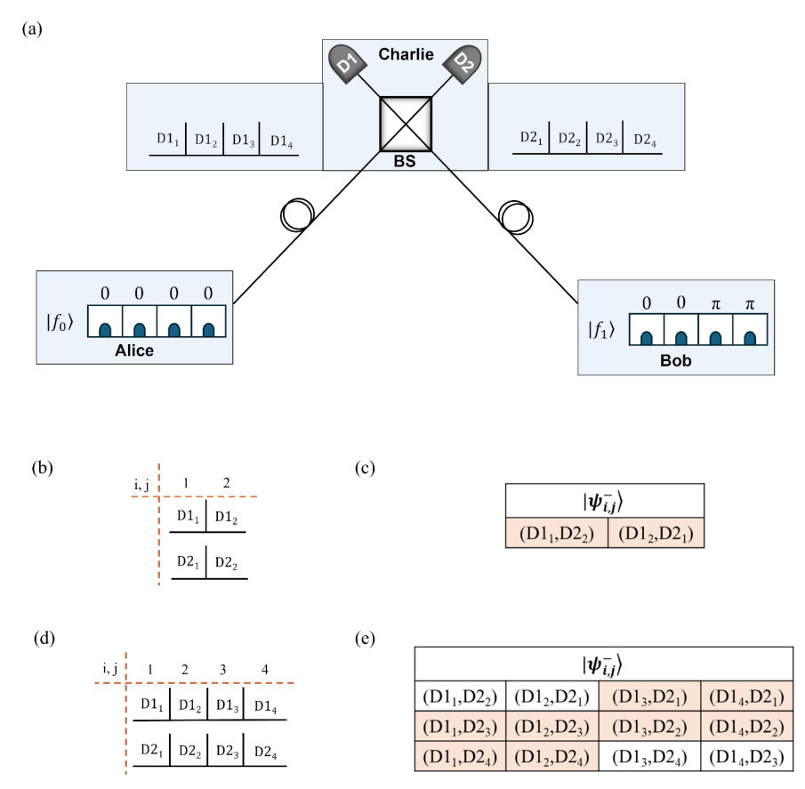
<figcaption class="paper-figure-caption"><b>Fig 3.</b> Figure 3 (a) Generation and detection of encoded states in X-basis with four states encoded. (b) Detection times slots for two-state encoding. (c) Possible detection pairs for extracting level-d coincidence pairs for two-state encoding. (d) Detection time slots for four-state encoding. (e) Possible detection pairs to extract level-d coincidence pairs for four-state encoding. The useful events for extracting level-d coincidence are shown as orange-shaded cells in (c) and (e). The Z basis states transmitted by Alice and Bob with optical pulses in the ith and jth time-bins with i ≠ j result in projections onto two-dimensional symmetric and antisymmetric states of the</figcaption>
</figure>
<figure class="paper-figure-card">
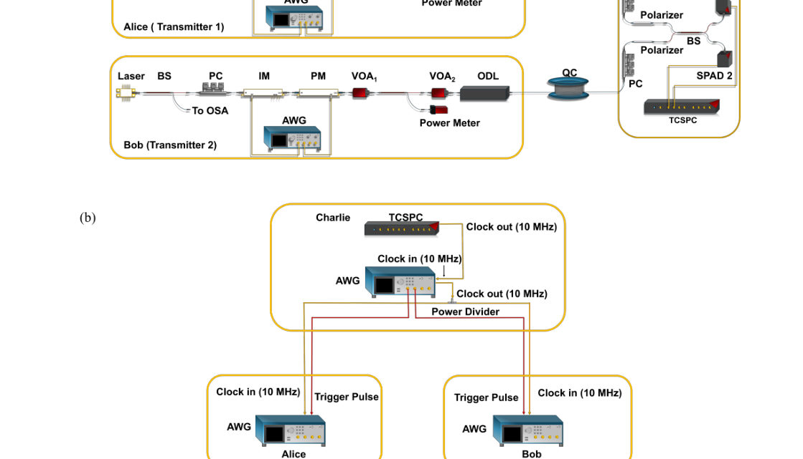
<figcaption class="paper-figure-caption"><b>Fig 4.</b> Figure 4: (a) Schematic of the MDI-QKD experimental setup. Continuous wave lasers at Alice and Bob are modulated using intensity modulator (IM) and phase modulator (PM). A 90:10 beam splitter directs 10% of the optical power to an optical spectral analyzer (OSA) for wavelength monitoring. The modulated pulses are then sent to variable optical attenuators (VOAs) to set the mean photon number. An optical delay line (ODL) ensures temporal alignment of pulses as they arrive at Charlie. The pulses received from both Alice and Bob are combined at Charlie’s end using a 2x2 beams combiner after matching their polarization states using motorized polarization controller (PC) and inline polarizers....</figcaption>
</figure>
<figure class="paper-figure-card">
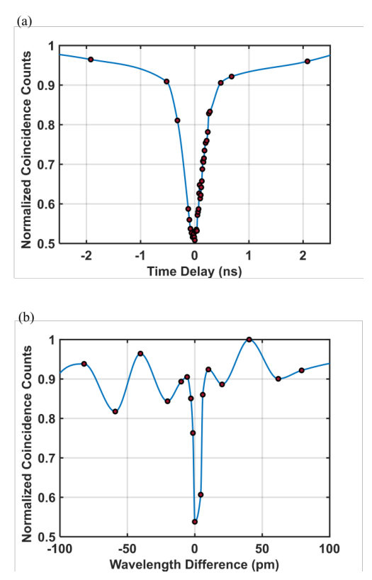
<figcaption class="paper-figure-caption"><b>Fig 5.</b> Figure 5: (a) HOM interference for the MDI-QKD experiment shown as the normalized coincidence versus the temporal delay between the two optical pulses arriving from the two transmitter nodes. (b) HOM Interference shown as the normalized coincidence as a function of wavelength difference between laser sources at Alice and Bob. The green data points represent the experimental and blue curve represents fit to the data. The SKRs obtained after subtracting the eavesdropper’s information, as a function of link length for the MDI-QKD experiments with d = 2, 4, and 8 state encoding, are shown in Figure 6(a). For shorter distances, a clear increase in SKR with d is observed, which can be attributed...</figcaption>
</figure>
</div>

<p><strong>Summary.</strong> The paper experimentally demonstrates a novel MDI-QKD protocol that utilizes a large alphabet set encoded across multiple time-bins. This technique overcomes the low key rate limitation of standard MDI-QKD by mapping each successful coincidence event to multiple bits. The results show substantial improvements in the achievable secret key rate, paving the way for more scalable quantum communication networks.</p>
<p><strong>Why it may be interesting.</strong> This work directly addresses the scalability of quantum key distribution by increasing the information density per transmitted quantum state, which is a key area for quantum network development.</p>
<details>
<summary>Detailed structure</summary>
<p><strong>Main problem.</strong> The primary goal is to improve the secret key rate (SKR) of Measurement-Device-Independent Quantum Key Distribution (MDI-QKD), which is inherently limited by coincidence measurements.</p>
<p><strong>Main result.</strong> By encoding states across a large alphabet set using time-bin encoding, the authors achieved significant SKR improvements (e.g., 3-times improvement) compared to conventional two-state encoding.</p>
<p><strong>Method.</strong> The protocol involves encoding states across multiple time-bins (large alphabet set $d$) and utilizing level-$d$ coincidence measurements at the central node to boost information capacity.</p>
<p><strong>Model / system.</strong> The experiment uses a standard MDI-QKD setup implemented with real fiber spools and single-photon avalanche photodetectors (SPADs), employing time-bin encoding for the large alphabet set.</p>
<p><strong>Key observables.</strong> Secret Key Rate (SKR) in bps, coincidence gain ($Q_s$), and phase-error rate ($\epsilon$).</p>
<p><strong>Important parameters / regimes.</strong> Encoding dimension ($d$), link length (2 km and 50 km), and the comparison against two-state encoding and COW-QKD.</p>
<p><strong>Assumptions / limitations.</strong> The analysis assumes that level-$d$ coincidence events are operationally equivalent to Bell-state measurements, and that discarding same-slot detection events is necessary due to detector deadtime limitations.</p>
<p><strong>Figures summary.</strong> Figures illustrate the time-bin encoding scheme, the level-$d$ coincidence measurement outcomes, and plot the SKR as a function of link length and encoding dimension ($d$).</p>
<p><strong>Paper structure.</strong> The paper details the protocol by describing state preparation (Z and X basis encoding), the measurement process using level-$d$ coincidences, parameter estimation via decoy states, and finally, calculating the secure key rate.</p>
</details>
<details>
<summary>Abstract</summary>
<p>We report on the experimental demonstration of an expanded basis set (called here as alphabet set) time-bin encoded measurement-device-independent quantum key distribution (MDI-QKD). While MDI-QKD is known to prevent detector-side attacks, it inherently suffers from reduced secret key rate (SKR) due to coincidence measurements performed at the central measurement node. To address this limitation, we encode states across multiple time-bins thereby increasing possible coincidence events and mapping each successful alphabet exchange to multiple bits, thereby increasing the information capacity per alphabet transmitted. Using a standard MDI-QKD set-up with real fiber spools and single-photon avalanche photodetectors, we achieve SKRs of 401 (133.6) bps and 28 (10.7) bps for 8 (2) encoded states for distances of 2 and 50 km, respectively, resulting in 3- and 2.63-times improvement, respectively when compared to the conventional two-state encoding. Furthemore, the large alphabet set MDIQKD results are compared with a similar encoding scheme implemented for coherent-one-way (COW) protocol. This comparison reveals a clear advantage of using a larger alphabet set for MDI-QKD, where increased Z-basis coincidence events yields increased SKR. These results provide important insights into the scalability of MDI-QKD key-rates without requiring additional hardware modifications, paving the way for next-generation, quantum key distribution networks.</p>
</details>
<p><sub><a href="#top">↑ back to top</a></sub></p>

<p><a id="paper-2606.00339"></a></p>
<h3 id="magnetic-self-frustration-from-spontaneous-structural-distortion"><a href="http://arxiv.org/abs/2606.00339v1">Magnetic self-frustration from spontaneous structural distortion</a></h3>
<p><strong>Authors:</strong> T. Vignau Costa, G. L. Rossini, D. C. Cabra, S. A. Grigera, R. A. Borzi<br>
<strong>Type:</strong> theory · <strong>Category:</strong> strongly correlated electrons · <strong>PDF:</strong> <a href="https://arxiv.org/pdf/2606.00339v1">https://arxiv.org/pdf/2606.00339v1</a><br>
<strong>Analysis basis:</strong> full PDF text, analyzed in chunks
<strong>Topic relevance:</strong> <code>analog quantum simulation</code> <strong>3/5</strong> · <code>exotic spin models in light-matter</code> <strong>3/5</strong> · <code>methods for driven-dissipative</code> <strong>1/5</strong></p>
<div class="figure-strip-hint">↔ Scroll figures horizontally</div>
<div class="paper-figures-scroll">
<figure class="paper-figure-card">
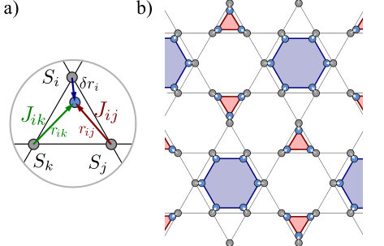
<figcaption class="paper-figure-caption"><b>Fig 1.</b> FIG. 1. a- A fragment of the kagom´e lattice. A distortion at site i is indicated together with its effect on the neighboring exchange couplings (Jij = 1 −α (rij −1), see Eq. (2)). Bond- shortening favors ferromagnetism, while enough lengthening leads to antiferromagnetism. b- The checkerboard configura- tion on the kagom´e lattice, stable at large α values. Arrows in- dicate ion displacements from the pristine lattice (gray dots). The distorted configuration (blue dots) consists of contracted triangles and hexagons; along the three kagom´e directions there is a length dimerization, seen as an alternation of short (ferro) and long (antiferro) bonds. Spins are aligned ferromag- netically in...</figcaption>
</figure>
<figure class="paper-figure-card">
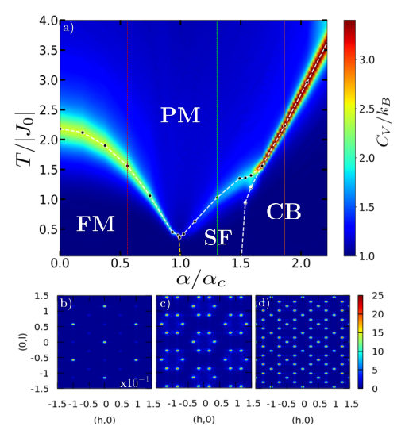
<figcaption class="paper-figure-caption"><b>Fig 2.</b> FIG. 2. a) The phase diagram α −T for the elastic kagom´e lattice. The color plot is an interpolation of the specific heat data from from the Monte Carlo curves. We use the CV peaks to trace the phase boundaries (black points; the white dashed lines are guides to the eye) between the paramagnetic phase (PM), ferromagnetic (FM), Checkerboard (CB), and self-frustrated (SF). The frontier between the SF and the CB phase is an exception, with white points taken from the max- imum of the order parameter fluctuations for the SF phase. Yellow dashed lines mark the steep low temperature bound- aries deduced from the measurement of entropies and energies at very low temperature. The vertical lines...</figcaption>
</figure>
<figure class="paper-figure-card">
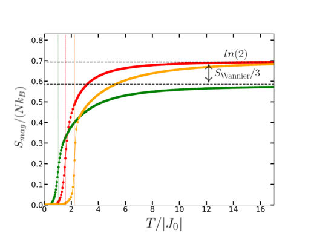
<figcaption class="paper-figure-caption"><b>Fig 3.</b> FIG. 4. Entropy per spin vs. temperature for representative values of the magnetoelastic coupling α/αc = 0.56, 1.3, 1.86 (using the same color code as in Fig. 3). The residual entropy (1/3 of the value of the residual entropy found by Wannier for the antiferromagnetic triangular lattice) for intermediate α evidences that in this case the order is partial.</figcaption>
</figure>
<figure class="paper-figure-card">
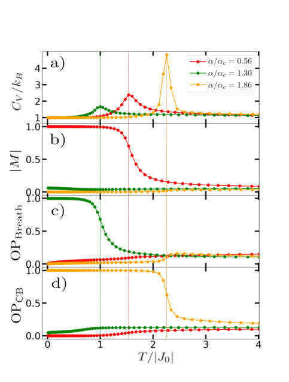
<figcaption class="paper-figure-caption"><b>Fig 4.</b> FIG. 3. Panel a): Specific heat vs. temperature for three rep- resentative values of the magnetoelastic coupling α/αc (see caption). The peak in CV in each curve marks a phase tran- sition into different ordered states, characterized by suitable order parameters. Panels b) to d): Order parameters as a function of temperature. Each parameter characterizes a dis- tinct type of order appearing in different ranges of the mag- netoelastic coupling: the magnetization modulus |M| for the FM phase at low α/αc (red data), the breathing parameter for the SF phase at intermediate α/αc (green data), and the CB order parameter for large α/αc (orange data).</figcaption>
</figure>
<figure class="paper-figure-card">

<figcaption class="paper-figure-caption"><b>Fig 5.</b> FIG. 5. A microstate within the degenerate SF phase ground state. The spontaneous symmetry breaking is reflected in that all “up” triangles (green) are stretched to antiferromagnetic exchanges (AFTs), while all “down” triangles (light red and blue according to their spin orientation) are compressed rein- forcing ferromagnetic couplings (FMTs). AFTs have isosceles distortions, with their symmetry axis lying along one of three possible directions. Their shape is robust: two particular val- ues of Jij &gt; 0 repeat along the lattice for all AFTs (thick and thin green lines), in all microstates. The associated short- enings of the sides of the FMTs produce several shapes but up to five different...</figcaption>
</figure>
</div>

<p><strong>Summary.</strong> This theoretical work models magnetic frustration arising from magnetoelastic coupling in a kagomé lattice. It shows that the system transitions through a self-frustrated phase, where structural distortions generate inherent magnetic frustration even when the initial magnetic interactions are simple. This mechanism provides a novel route to understanding complex magnetic ground states in correlated materials.</p>
<p><strong>Why it may be interesting.</strong> The concept of dynamically generated frustration via lattice coupling is highly relevant to understanding emergent quantum phases in strongly correlated materials, particularly those exhibiting structural instabilities.</p>
<details>
<summary>Detailed structure</summary>
<p><strong>Main problem.</strong> The paper investigates 'magnetic self-frustration,' a phenomenon where magnetoelastic coupling induces magnetic frustration in an otherwise non-frustrated system.</p>
<p><strong>Main result.</strong> The system undergoes a magnetostructural transition into a self-frustrated (SF) phase, characterized by spontaneous structural distortions and residual magnetic entropy, separating the simple ferromagnetic and highly ordered checkerboard phases.</p>
<p><strong>Method.</strong> The study employs classical Monte Carlo simulations and analytical linear approximations to model the coupled spin-lattice Hamiltonian.</p>
<p><strong>Model / system.</strong> The system is an Ising spin model on a kagomé lattice coupled to local elastic distortions via a magnetoelastic coupling constant $\alpha$. The Hamiltonian includes terms for magnetic exchange and elastic energy.</p>
<p><strong>Key observables.</strong> Magnetization modulus ($|M|$), Breathing order parameter ($OP_{Breath}$), Specific heat ($C_V$), and residual entropy.</p>
<p><strong>Important parameters / regimes.</strong> The magnetoelastic coupling constant $\alpha$ relative to a critical value $\alpha_c$, and temperature $T$.</p>
<p><strong>Assumptions / limitations.</strong> The analysis relies on expanding the exchange coupling to first order in the distance change and using harmonic oscillator models for site displacements.</p>
<p><strong>Figures summary.</strong> Figures illustrate the phase diagram ($\alpha-T$) showing FM, SF, and CB boundaries, and show histograms of magnetic exchange couplings demonstrating the robustness of certain AFM bonds in the SF phase.</p>
<p><strong>Paper structure.</strong> The paper progresses by defining the Hamiltonian, simulating the system across different $\alpha$ regimes (FM $\to$ SF $\to$ CB), and analyzing the resulting structural and magnetic order parameters to map out the phase diagram.</p>
</details>
<details>
<summary>Abstract</summary>
<p>In frustrated magnetism, lattice distortions mediated by magnetoelastic coupling are commonly invoked as an escape route from extensive degeneracy toward an ordered ground state and, in some cases, the onset of multiferroicity. Here we present a minimal classical model that illustrates the converse phenomenon, which we term ``magnetic self-frustration''. Monte Carlo simulations reveal that a kagomé lattice with trivial magnetic interactions -- namely, nearest-neighbor Ising ferromagnetism -- undergoes a magnetostructural transition into a breathing-like phase, characterized by irregular bond dimerization along the three kagomé directions. Structurally, the equilateral triangles belonging to one of the two kagomé sublattices spontaneously distort, expanding into isosceles triangles. An analysis to first order in the magnetoelastic coupling constant $α$ shows that the shape of these triangles is remarkably robust. Acting like rigid building blocks in a puzzle, their vertices determine the geometry of the second sublattice, giving rise to contracted ferromagnetic triangles with a variety of shapes. The magnetic sector can be mapped onto an effective antiferromagnetic triangular lattice, which remains disordered down to low temperatures and retains a finite residual entropy of one third of that of Wannier. This self-frustrated phase takes place at intermediate values of $α$, separating the conventional undistorted ferromagnetic phase at weak coupling from a strongly coupled ordered phase characterized by a regular dimerized up-up-down-down antiferromagnetic pattern along the three kagomé directions, built from ferromagnetic triangles and hexagons.</p>
</details>
<p><sub><a href="#top">↑ back to top</a></sub></p>

<p><a id="paper-2606.00254"></a></p>
<h3 id="symmetry-protected-quantum-computing-using-metamaterials"><a href="http://arxiv.org/abs/2606.00254v1">Symmetry-Protected Quantum Computing using Metamaterials</a></h3>
<p><strong>Authors:</strong> Neil F. Johnson, Ferney J. Rodriguez, Luis Quiroga<br>
<strong>Type:</strong> theory · <strong>Category:</strong> quantum information and computing · <strong>PDF:</strong> <a href="https://arxiv.org/pdf/2606.00254v1">https://arxiv.org/pdf/2606.00254v1</a><br>
<strong>Analysis basis:</strong> full PDF text, analyzed in chunks
<strong>Topic relevance:</strong> <code>analog quantum simulation</code> <strong>3/5</strong> · <code>interference shaping light</code> <strong>3/5</strong> · <code>entanglement &amp; information structure</code> <strong>1/5</strong></p>
<div class="figure-strip-hint">↔ Scroll figures horizontally</div>
<div class="paper-figures-scroll">
<figure class="paper-figure-card">

<figcaption class="paper-figure-caption"><b>Fig 1.</b> Fig. 1. Schematic of the symmetry-protected quantum-computing architecture. N interacting quantum particles in a parabolic confinement (frequency ω0). A twisted-light pulse with orbital angular momentum at central frequency ωT performs WRITE and READ operations through the OAM selection rule ∆|m| = ±(l +σ). Examples of the quantum particles include, but are not limited to, electrons or holes in a semiconductor system. A perpendicular magnetic field B can then be used to manipulate the relative-motion modes. Stray linear electric fields entering from any direction and at any temporal frequency couple only to the center-of-mass coordinate (generalized Kohn theorem) and therefore cannot...</figcaption>
</figure>
</div>

<p><strong>Summary.</strong> This paper outlines a novel, general architecture for quantum computing that achieves noise protection by leveraging the generalized Kohn theorem in parabolic confinement. It integrates this protection with precise control using twisted-light orbital angular momentum and solves the physical integration challenge using metamaterial nanofocusing on Weyl semimetals. The resulting framework is highly portable, applicable to diverse systems like cold atoms and semiconductor dots.</p>
<p><strong>Why it may be interesting.</strong> This work is highly relevant as it proposes a unified, platform-agnostic blueprint for fault-tolerant quantum computation, bridging fundamental symmetry principles with cutting-edge photonic and solid-state engineering.</p>
<details>
<summary>Detailed structure</summary>
<p><strong>Main problem.</strong> Proposing a general, practical architecture for quantum computing that combines symmetry protection, structured light control, and nanofocusing to overcome current limitations in qubit coherence and addressability.</p>
<p><strong>Main result.</strong> The architecture successfully unifies the generalized Kohn theorem (symmetry protection), twisted-light OAM control, and metamaterial nanofocusing into a coherent, portable framework for quantum information processing.</p>
<p><strong>Method.</strong> The approach combines theoretical analysis of symmetry protection (Kohn theorem) with advanced concepts from quantum optics (OAM-carrying light) and condensed matter physics (Weyl semimetal plasmonics).</p>
<p><strong>Model / system.</strong> The system is modeled using interacting particles confined by a parabolic potential, applicable to semiconductor quantum dots, cold atoms, and trapped ions. The qubit encoding utilizes relative-motion correlation sectors.</p>
<p><strong>Key observables.</strong> Qubit splitting frequency ($\hbar\omega_{	ext{qubit}}$), OAM selection rules ($\Delta|m|$), and the residual quadrupolar noise floor.</p>
<p><strong>Important parameters / regimes.</strong> Parabolic confinement frequency ($\omega_0$), OAM quantum number ($l+\sigma$), and the characteristic length scales related to the wavelength-pitch mismatch.</p>
<p><strong>Assumptions / limitations.</strong> The core assumption is the applicability of the generalized Kohn theorem for protection, and the technical assumption is the realizability of OAM-selective nanofocusing using magnetic Weyl semimetals.</p>
<p><strong>Figures summary.</strong> Figure 1 schematically illustrates the architecture: N interacting particles in parabolic confinement ($\omega_0$) controlled by a twisted-light pulse ($\omega_T$) via OAM selection, leaving relative modes protected by the Kohn theorem.</p>
<p><strong>Paper structure.</strong> The paper develops the architecture by first establishing the need for general symmetry protection (Kohn theorem), then detailing the control mechanism using OAM-light, and finally solving the integration challenge via metamaterial nanofocusing, presenting a portable framework applicable across multiple physical platforms.</p>
</details>
<details>
<summary>Abstract</summary>
<p>We propose a new architecture for practical quantum computing that combines three established principles: symmetry protection of relative-motion qubits via the generalized Kohn theorem, control via twisted-light orbital angular momentum, and metamaterial nanofocusing (e.g. using Weyl-semimetal plasmonics). Crucially, the core mechanism is generic: it applies to any current or future quantum computing system involving parabolic confinement, including cold atoms, ions, and semiconductor dots.</p>
</details>
<p><sub><a href="#top">↑ back to top</a></sub></p>

<p><a id="paper-2606.01716"></a></p>
<h3 id="doping-and-temperature-dependent-electronic-structure-and-spin-dynamics-in-the-hubbard-model-on-a-square-lattice-within-cluster-perturbation-theory"><a href="http://arxiv.org/abs/2606.01716v1">Doping- and temperature-dependent electronic structure and spin dynamics in the Hubbard model on a square lattice within cluster perturbation theory</a></h3>
<p><strong>Authors:</strong> V. I. Kuz'min, S. G. Ovchinnikov<br>
<strong>Type:</strong> theory · <strong>Category:</strong> strongly correlated electrons · <strong>PDF:</strong> <a href="https://arxiv.org/pdf/2606.01716v1">https://arxiv.org/pdf/2606.01716v1</a><br>
<strong>Analysis basis:</strong> full PDF text, analyzed in chunks
<strong>Topic relevance:</strong> <code>analog quantum simulation</code> <strong>3/5</strong> · <code>Keldysh / 2PI / non-Gaussian methods</code> <strong>2/5</strong> · <code>methods for driven-dissipative</code> <strong>1/5</strong></p>
<div class="figure-strip-hint">↔ Scroll figures horizontally</div>
<div class="paper-figures-scroll">
<figure class="paper-figure-card">

<figcaption class="paper-figure-caption"><b>Fig 1.</b> FIG. 1. The electronic spectral function calculated in CPT for three doping values along high-symmetry directions at various temperatures.</figcaption>
</figure>
<figure class="paper-figure-card">

<figcaption class="paper-figure-caption"><b>Fig 2.</b> FIG. 2. The EDCs at the Fermi-sarface’s wave vector kF in the nodal and antinodal directions for the three values of doping concentration p and several temperatures indicated within the insets.</figcaption>
</figure>
<figure class="paper-figure-card">

<figcaption class="paper-figure-caption"><b>Fig 3.</b> FIG. 4. The third coordination sphere’s spin correlations (left) and the Fermi level’s antinodal to nodal ratio (right). The colored (correspondingly to the lines) regions schemat- ically show the crossover temperature T ∗∗, below which the Fermi arc, as well as the spin correlations, remain almost un- changed.</figcaption>
</figure>
<figure class="paper-figure-card">

<figcaption class="paper-figure-caption"><b>Fig 4.</b> FIG. 3. The spectral weight at the Fermi level for various doping and temperature values.</figcaption>
</figure>
<figure class="paper-figure-card">

<figcaption class="paper-figure-caption"><b>Fig 5.</b> FIG. 7. (a)-(c) The temperature evolution of the GMFA Fermi surface at p=0.083.</figcaption>
</figure>
</div>

<p><strong>Summary.</strong> This work applies Cluster Perturbation Theory to the Hubbard model on a square lattice to map out the electronic and spin properties across different doping and temperature regimes. It successfully reproduces key features of the pseudogap state observed in cuprates, highlighting the critical role of short-range antiferromagnetic correlations in shaping the electronic spectrum. The study advances the theoretical understanding of strongly correlated electron systems near superconducting phases.</p>
<p><strong>Why it may be interesting.</strong> The detailed study of the PG phase in the Hubbard model provides a theoretical framework for understanding high-temperature superconductivity, which involves complex, strongly correlated quantum dynamics relevant to open quantum systems.</p>
<details>
<summary>Detailed structure</summary>
<p><strong>Main problem.</strong> The study investigates the doping and temperature dependencies of the electronic structure and dynamic spin susceptibility in the Hubbard model, focusing on the mysterious Pseudogap (PG) state observed in cuprate superconductors.</p>
<p><strong>Main result.</strong> The calculations show that the electronic structure exhibits a nodal-antinodal dichotomy, and the PG signature is visible as a strong suppression of spectral weight, with short-range antiferromagnetism being crucial for this behavior.</p>
<p><strong>Method.</strong> The primary theoretical tool is Cluster Perturbation Theory (CPT), supplemented by a Generalized Mean-Field Approximation (GMFA) to analyze spectral functions and spin dynamics.</p>
<p><strong>Model / system.</strong> The system is modeled by the Hubbard Hamiltonian on a square lattice, incorporating nearest and next-nearest hopping terms and a local Coulomb repulsion U. The analysis covers varying doping levels and temperatures.</p>
<p><strong>Key observables.</strong> Electronic spectral function A(k, omega), dynamic transverse spin susceptibility spectrum, and the degree of spectral weight suppression at the Fermi level.</p>
<p><strong>Important parameters / regimes.</strong> Doping ($p$), Temperature ($T$), Coulomb repulsion ($U$), and hopping parameters ($t, t'$).</p>
<p><strong>Assumptions / limitations.</strong> The use of CPT and GMFA introduces approximations, notably that the GMFA alone is insufficient to capture the full frequency dependence of the PG drop, suggesting the need for dynamic correlation terms.</p>
<p><strong>Figures summary.</strong> Figures illustrate the electronic spectral function across different doping/temperature regimes, showing the nodal-antinodal dichotomy, and present the dynamic spin susceptibility spectra for specific doping levels.</p>
<p><strong>Paper structure.</strong> The paper systematically analyzes the electronic and spin spectra using CPT, comparing results with experimental data (ARPES, INS). It progresses from general spectral analysis to discussing the role of short-range correlations in forming the PG, concluding with limitations regarding dynamic correlation inclusion.</p>
</details>
<details>
<summary>Abstract</summary>
<p>The doping and temperature dependencies of the electronic structure and the dynamic spin susceptibility of the Hubbard model on a square lattice are studied within cluster perturbation theory (CPT). The most general features of both electronic and spin spectra qualitatively agree with the experimental data on cuprates. Generalized mean-field calculations of the electronic structure using static short-range magnetic correlations from CPT are also implemented and compared with the results of CPT, allowing us to discuss the role of short-range antiferromagnetism in the formation of the pseudogap.</p>
</details>
<p><sub><a href="#top">↑ back to top</a></sub></p>

<p><a id="paper-2606.02155"></a></p>
<h3 id="information-hierarchy-in-many-body-berry-phase"><a href="http://arxiv.org/abs/2606.02155v1">Information Hierarchy in Many-Body Berry Phase</a></h3>
<p><strong>Authors:</strong> Kai Watanabe<br>
<strong>Type:</strong> theory · <strong>Category:</strong> strongly correlated electrons · <strong>PDF:</strong> <a href="https://arxiv.org/pdf/2606.02155v1">https://arxiv.org/pdf/2606.02155v1</a><br>
<strong>Analysis basis:</strong> full PDF text, analyzed in chunks
<strong>Topic relevance:</strong> <code>entanglement &amp; information structure</code> <strong>3/5</strong> · <code>analog quantum simulation</code> <strong>2/5</strong> · <code>Keldysh / 2PI / non-Gaussian methods</code> <strong>1/5</strong></p>
<div class="figure-strip-hint">↔ Scroll figures horizontally</div>
<div class="paper-figures-scroll">
<figure class="paper-figure-card">

<figcaption class="paper-figure-caption"><b>Fig 1.</b> Low-resolution page preview, page 2</figcaption>
</figure>
<figure class="paper-figure-card">

<figcaption class="paper-figure-caption"><b>Fig 2.</b> Low-resolution page preview, page 3</figcaption>
</figure>
<figure class="paper-figure-card">

<figcaption class="paper-figure-caption"><b>Fig 3.</b> Low-resolution page preview, page 4</figcaption>
</figure>
<figure class="paper-figure-card">

<figcaption class="paper-figure-caption"><b>Fig 4.</b> Low-resolution page preview, page 5</figcaption>
</figure>
<figure class="paper-figure-card">

<figcaption class="paper-figure-caption"><b>Fig 5.</b> Low-resolution page preview, page 6</figcaption>
</figure>
</div>

<p><strong>Summary.</strong> This theoretical work establishes a rigorous information hierarchy showing that global topological invariants, like the Berry phase, generally cannot be determined solely from a finite number of local correlation measurements in interacting many-body systems. The authors identify that this limitation is overcome only in special cases, such as when the system is quasi-free or when strong symmetries are present.</p>
<p><strong>Why it may be interesting.</strong> This work provides a fundamental theoretical boundary condition for how local measurements constrain global topological properties, which is critical for designing experimental protocols or interpreting numerical simulations of topological phases.</p>
<details>
<summary>Detailed structure</summary>
<p><strong>Main problem.</strong> The central problem is determining the extent to which the geometric information of an interacting many-body ground state, specifically the Berry phase, can be inferred from a finite set of local correlation functions.</p>
<p><strong>Main result.</strong> In general, no finite set of local correlators is sufficient to uniquely determine the global Berry phase in the thermodynamic limit, establishing a strict information hierarchy. Exceptions exist for quasi-free models or when symmetries impose strong constraints.</p>
<p><strong>Method.</strong> The analysis uses the Resta formula, viewing the logarithm of the partition function as a cumulant generating function, and systematically compares the constraints imposed by low-order versus high-order density correlators.</p>
<p><strong>Model / system.</strong> The study applies to general interacting many-body quantum systems, using the Berry phase derived from the expectation value of a unitary operator (LSM) threading a flux. Examples include analyzing chain rings and considering general fermionic Hamiltonians.</p>
<p><strong>Key observables.</strong> The Berry phase ($\gamma$), the cumulants ($\kappa_p$), and various $p$-point density correlators ($\langle \hat{n}_{j_1} \cdots \hat{n}_{j_p} 
angle$).</p>
<p><strong>Important parameters / regimes.</strong> The system size ($L$), the number of particles ($N$), and the order of the correlation ($p$). The thermodynamic limit ($L 	o \infty$) is crucial.</p>
<p><strong>Assumptions / limitations.</strong> The argument is analytic and does not rely on a specific microscopic Hamiltonian, though specific cases like quasi-free models or symmetry constraints are analyzed.</p>
<p><strong>Figures summary.</strong> The notes mention Table I, which explicitly calculates exact cumulants ($\kappa_p$) for various $(L, N)$ pairs, demonstrating the growth of these cumulants with system size.</p>
<p><strong>Paper structure.</strong> The paper establishes the general information hierarchy using the cumulant generating function approach, presents a concrete counterexample (e.g., $L=6$ chain ring) showing the failure of low-order correlators to determine the phase, and then details the two exceptional 'yes-go' cases (quasi-free and symmetry-enforced) where the hierarchy closes.</p>
</details>
<details>
<summary>Abstract</summary>
<p>Many-body topology is a central concept in modern theories of solids, and identifying effective degrees of freedom that capture it is important both fundamentally and practically. This work studies the extent to which geometric information of an interacting many-body ground state can be inferred from a finite number of local correlations. Starting from the Resta formula, $ z=\left\langle \exp!\left(\frac{2πi}{L}\hat X\right)\right\rangle$, we view $\log z$ as the cumulant generating function and establish a generic information hierarchy across cumulant orders. We show that, for an $N$-particle system, even complete knowledge of all density correlators up to order $N-1$ does not, in general, uniquely determine the Berry phase $γ=\operatorname{Im}\log z \, (\mathrm{mod}\ 2π)$. In the thermodynamic limit, the statement becomes stronger: no finite set of local correlators suffices to determine the global holonomy. We also identify two exceptional yes-go cases in which the hierarchy is broken. First, for quasi-free models, all cumulants are determined by the particle two-point correlation function. Second, symmetry-enforced constraints can reduce the infinite cumulant sum entering $\log z$ to finite information. The argument is analytic and does not rely on a specific microscopic Hamiltonian. Our results clarify a limitation of approaches based on local degrees of freedom for many-body holonomy and provide a minimal framework for distinguishing when global holonomies are encoded in local correlations and when they are not. We also comment on the possibility of analogous hierarchies in other contexts, such as the quantum marginal problem in quantum information theory and many-body scattering problems. Finally, we discuss implications for future numerical work, including machine-learning approaches to the search for topological phases.</p>
</details>
<p><sub><a href="#top">↑ back to top</a></sub></p>

<p><a id="paper-2606.02476"></a></p>
<h3 id="leveraging-structural-disorder-to-enhance-topological-phases"><a href="http://arxiv.org/abs/2606.02476v1">Leveraging structural disorder to enhance topological phases</a></h3>
<p><strong>Authors:</strong> Laura Gomez Paz, Peru d'Ornellas, Adolfo G Grushin<br>
<strong>Type:</strong> theory · <strong>Category:</strong> disordered systems and neural networks · <strong>PDF:</strong> <a href="https://arxiv.org/pdf/2606.02476v1">https://arxiv.org/pdf/2606.02476v1</a><br>
<strong>Analysis basis:</strong> full PDF text, analyzed in chunks
<strong>Topic relevance:</strong> <code>analog quantum simulation</code> <strong>3/5</strong> · <code>driven-dissipative phase transition</code> <strong>1/5</strong> · <code>entanglement &amp; information structure</code> <strong>1/5</strong> · <code>methods for driven-dissipative</code> <strong>1/5</strong></p>
<div class="figure-strip-hint">↔ Scroll figures horizontally</div>
<div class="paper-figures-scroll">
<figure class="paper-figure-card">

<figcaption class="paper-figure-caption"><b>Fig 1.</b> FIG. 1. A comparison between different types of disorder. (a) In a crystal the spin quantization reference frame and coordination is equal across sites. (b) Spin-frame disorder, scrambles the spin-quantization reference frame between sites. (c) In amorphous systems, spin-frame disorder can coexist with structural, bond and on-site disorder. We study the effect of these disorders and point out limitations that they bring to known real-space methods to characterise topology.</figcaption>
</figure>
<figure class="paper-figure-card">

<figcaption class="paper-figure-caption"><b>Fig 2.</b> FIG. 2. Failure of the spin-Bott index in the presence of spin-frame disorder. (a) As the fraction of sites with spin-frame disorder is in- creased from η = 0 to η = 1 the spin-Bott index from Eq. (14) continuously drops to zero. At η = 1 if fails to diagnose the topologi- cal transition. The spin-Bott index requires a well defined spin gap, which is generically closed by spin-frame disorder. (b) The localizer index from Eq. (8) (with κ = 1) is independent of η and correctly captures the topological phase transition as a function of disorder strength W.</figcaption>
</figure>
<figure class="paper-figure-card">

<figcaption class="paper-figure-caption"><b>Fig 3.</b> FIG. 3. Two examples of progressively disordering a system starting from a square lattice on the unit square. At each point, bonds are drawn between pairs of sites that are closer than 1.3 times the original lattice spacing r0. (a) With the repulsion parameter, ρ, set to zero, each point is moved to a new position sampled from a Gaussian distribution centred on the original position of the vertex with standard deviation σ. As σ is increased, this tunes smoothly between the square lattice and a set of uniformly distributed vertices. (b) With ρ set to 0.3, the probability of moving a vertex close to any other existing vertices is suppressed. Thus, as the system is progressively disordered by...</figcaption>
</figure>
<figure class="paper-figure-card">

<figcaption class="paper-figure-caption"><b>Fig 4.</b> FIG. 4. Phase diagram of the localizer index for the two-dimensional BHZ model comparing the effect of on-site Anderson and structural disorder, with a small fraction of spin-frame disordered sites η = 0.15, for a system size L = 30. Each point is calculated with A = 1, and averaged over 100 realisations of disorder. The phase diagram is calculated in each case as a function of the parameter M in Eq. (4) and the respective type of disorder. The spectral localizer index given by Eq. (8) is computed for κ = 1 and E, x at the centre of the energy spectrum and the system, respectively. (a) The localizer index for the BHZ model as a function of Anderson disorder strength W. (b-d) The localizer...</figcaption>
</figure>
<figure class="paper-figure-card">

<figcaption class="paper-figure-caption"><b>Fig 5.</b> FIG. 5. Phase diagram of the localizer index for the three-dimensional topological insulating model in the presence of Anderson and struc- tural disorder. Each point is calculated with A = 1, and averaged over 100 realizations of disorder, for a system size L = 10. The localizer index, Eq. (10), is computed for κ = 2 and E, x at the bulk of the energy spectrum and the system, respectively. (a) Localizer index for the three-dimensional topological insulator model as a function of Anderson disorder strength W. (b-d) Localizer index as a function of M and the strength of Gaussian structural disorder, characterized by its standard deviation σ with the inter-site repulsion ρ. As in Fig. 4, three...</figcaption>
</figure>
</div>

<p><strong>Summary.</strong> This work develops robust theoretical tools, particularly the spectral localizer, to diagnose topological phases in the presence of structural disorder. It reveals that structural disorder's effect is highly dimension-dependent, favoring topological stability in 2D lattices with repulsive interactions but being generally destructive in 3D. This provides key design principles for realizing topological materials in amorphous or disordered solid-state systems.</p>
<p><strong>Why it may be interesting.</strong> The development of basis-independent topological diagnostics like the spectral localizer is crucial for analyzing complex, disordered quantum systems where symmetries are easily broken or ill-defined.</p>
<details>
<summary>Detailed structure</summary>
<p><strong>Main problem.</strong> The paper investigates how structural disorder, as opposed to on-site disorder, affects the ability to induce and sustain topological phases in quantum materials.</p>
<p><strong>Main result.</strong> Structural disorder can enhance and sustain topological phases in two dimensions if atomic sites are penalized from being too close, but this effect is generally detrimental in three dimensions.</p>
<p><strong>Method.</strong> The authors employ advanced theoretical diagnostics, notably the spectral localizer, to calculate topological invariants ($\mathbb{Z}_2$ invariants) in real space, circumventing limitations of traditional markers when spin-frame disorder is present.</p>
<p><strong>Model / system.</strong> The study analyzes topological insulators (e.g., BHZ model) on lattices, modeling disorder through structural shifts ($\sigma$) and inter-site repulsion ($
ho$). The Hamiltonian incorporates hopping strengths exponentially dependent on atomic separation.</p>
<p><strong>Key observables.</strong> Topological invariants ($\mathbb{Z}_2$ invariants), local gap, structure factor, and the spectral localizer index.</p>
<p><strong>Important parameters / regimes.</strong> Dimensionality (2D vs 3D), structural disorder strength ($\sigma$), inter-site repulsion ($
ho$), and the disorder type (structural vs. on-site Anderson disorder $W$).</p>
<p><strong>Assumptions / limitations.</strong> The spectral localizer is assumed to provide a basis-independent and robust diagnostic tool, especially when global spin-reference frames are scrambled by disorder.</p>
<p><strong>Figures summary.</strong> Figures illustrate phase diagrams comparing topological regimes under Anderson vs. structural disorder in 2D and 3D, and show structure factors comparing systems with and without inter-site repulsion.</p>
<p><strong>Paper structure.</strong> The paper progresses by first establishing the limitations of standard topological markers under disorder, then introducing and validating the spectral localizer, and finally applying this tool to systematically compare the effects of structural disorder in 2D versus 3D systems.</p>
</details>
<details>
<summary>Abstract</summary>
<p>On-site disorder can be leveraged to induce a transition from a trivial to a topological insulator. However it is unclear if structural disorder in the absence of on-site disorder can aid a similar transition and, if so, which kind of structural disorder is more favourable. We numerically show that structural disorder can enhance and sustain a topological phase up to strong disorder in two dimensions provided that one penalises atomic sites from being close to one another. However, we find this effect is absent in three dimensions, where structural disorder appears generically detrimental to the phase. In our calculations we include disorder that can scramble the global spin-reference frame, an overlooked type of disorder expected to exist in strongly disordered solids. This disorder fatally scrambles the information necessary for the spin-Bott and the spin-Chern marker to correctly diagnose a topological phase. By using the spectral localizer, a local marker directly defined using the time-reversal symmetry operator rather than a spin-projection, we show how one can circumvent this limitation, providing a basis-indifferent theory for calculating Z2 invariants. Our work showcases that not all structural disorders are equally beneficial to topology, and highlights guiding principles to enhance and detect topological phases in both solid-state and metamaterial realisations.</p>
</details>
<p><sub><a href="#top">↑ back to top</a></sub></p>

<p><a id="paper-2606.00748"></a></p>
<h3 id="shortcut-to-adiabatic-isomeric-population-transfer-of-the-math624math-nucleus-via-hyperfine-electronic-bridge"><a href="http://arxiv.org/abs/2606.00748v1">Shortcut to Adiabatic Isomeric Population Transfer of the $^{229}\mathrm{Th}$ Nucleus via Hyperfine Electronic Bridge</a></h3>
<p><strong>Authors:</strong> Bo Liu, Wu Wang, Yong Li<br>
<strong>Type:</strong> theory · <strong>Category:</strong> other · <strong>PDF:</strong> <a href="https://arxiv.org/pdf/2606.00748v1">https://arxiv.org/pdf/2606.00748v1</a><br>
<strong>Analysis basis:</strong> full PDF text, analyzed in chunks
<strong>Topic relevance:</strong> <code>methods for driven-dissipative</code> <strong>3/5</strong> · <code>correlated / nonlocal dissipation</code> <strong>1/5</strong> · <code>driven-dissipative phase transition</code> <strong>1/5</strong> · <code>non-equilibrium dynamics</code> <strong>1/5</strong></p>
<div class="figure-strip-hint">↔ Scroll figures horizontally</div>
<div class="paper-figures-scroll">
<figure class="paper-figure-card">

<figcaption class="paper-figure-caption"><b>Fig 1.</b> Figure 1: The six-level model for 229Th3+ ions begins with |1⟩≡|[Ig7s1/2]F = 2⟩and aims to excite the isomeric state |3⟩≡|[Ie7s1/2]F = 2⟩via the intermediate state |2⟩≡|[Ig7p1/2]F = 3⟩. An electron-assisting laser (with Rabi frequency Ωe) drives the transition between |1⟩and |2⟩, while a bridge-assisting laser (with Rabi frequency Ωb) couples |2⟩and |3⟩. The decay from |2⟩to |1⟩(with decay rate γ21), |4⟩≡|[Ig7s1/2]F = 3⟩(with decay rate γ24), and |5⟩≡|Ig, 6d3/2⟩(with decay rate γ25), as well as the decay from |5⟩to |6⟩≡|Ig, 5f5/2⟩(with decay rates γ56) are considered. Hyperfine structures of |5⟩and |6⟩are ignored, as they do not affect the isomeric population transfer from |1⟩to |3⟩. ∆= E2...</figcaption>
</figure>
<figure class="paper-figure-card">

<figcaption class="paper-figure-caption"><b>Fig 2.</b> Fig. 2. The upper and lower panels correspond to total operation times of ttotal = 280 µs and ttotal = 140 µs, respectively. (a, d) Rabi frequencies ˜Ωe(t) and ˜Ωb(t) employed in the STIRSAP scheme. (b, e) Population transfer efficiencies from state |1⟩to state |3⟩achieved via the STIRSAP scheme, which are 79.38% and 35.63%, respectively. (c, f) Population transfer efficiencies obtained with the STIRAP scheme, corresponding to 41.88% and 0.36%, respectively. The parameters are: (a, b) σ = 54 µs, te = 120 µs, tb = 160 µs, Ωb/2π = Ωe/2π = 6.8×105 Hz, ∆= 1000|Ωb(tb)|; (c) σ = 67 µs, te = 120 µs, tb = 122 µs, Ωb/2π = Ωe/2π = 12.9 × 105 Hz, ∆= 1000|Ωb(tb)|; (d, b) σ = 20 µs, te = 67 µs, tb = 73...</figcaption>
</figure>
<figure class="paper-figure-card">

<figcaption class="paper-figure-caption"><b>Fig 3.</b> Fig. 3. (a) Influence of the total operation time ttotal on the population transfer efficiency of the STIRSAP scheme (red dashed line) and the STIRAP scheme (blue solid line), respectively. Parameters are set as Ωb(tb)/2π = Ωe(te)/2π = 6.8×105 Hz and ∆= 1000 |Ωb(tb)|. (b, c) Influence of the detuning ∆on the population transfer efficiency, comparing the STIRSAP (red dashed line) and the STIRAP scheme (blue solid line). Parameters are set as Ωb(tb)/2π = Ωe(te)/2π = 6.8 × 105 Hz. The total operation times are 140 ms for (b) and 140 µs for (c), respectively. (d) Influence of the peak Rabi frequencies Ωb(tb) = Ωe(te) on the population transfer efficiency of the STIRSAP scheme for long operation...</figcaption>
</figure>
</div>

<p><strong>Summary.</strong> This paper introduces the Stimulated Raman Shortcut-to-Adiabatic Passage (STIRSAP) method for manipulating the isomeric state of the $^{229}\mathrm{Th}$ nucleus. By employing counter-diabatic driving, the authors successfully accelerate the population transfer process from milliseconds down to microseconds. This advancement significantly enhances the feasibility of controlling nuclear isomers using electronic structure interactions.</p>
<p><strong>Why it may be interesting.</strong> This work is highly relevant to AMO physics and open quantum systems as it applies advanced quantum control techniques (STAs/counter-diabatic driving) to manipulate nuclear quantum states using electronic structure as a bridge.</p>
<details>
<summary>Detailed structure</summary>
<p><strong>Main problem.</strong> To significantly shorten the operation time for the isomeric population transfer of the $^{229}\mathrm{Th}$ nucleus while maintaining high efficiency.</p>
<p><strong>Main result.</strong> The Stimulated Raman Shortcut-to-Adiabatic Passage (STIRSAP) method achieves transfer in hundreds of microseconds, dramatically faster than previous methods, while maintaining high efficiency and showing improved robustness.</p>
<p><strong>Method.</strong> The study employs the STIRSAP quantum control technique, which utilizes counter-diabatic driving to accelerate the population transfer process compared to standard STIRAP.</p>
<p><strong>Model / system.</strong> The system is modeled as a six-level structure involving the $^{229}\mathrm{Th}$ nucleus and its hyperfine electronic bridge. The time evolution is governed by a quantum master equation incorporating decay processes.</p>
<p><strong>Key observables.</strong> Population transfer efficiency from the initial state to the isomeric state, and the operation time ($t_{	ext{total}}$).</p>
<p><strong>Important parameters / regimes.</strong> Operation times (hundreds of microseconds vs. hundreds of milliseconds), two-photon detuning ($\delta$), and one-photon detuning ($\Delta$).</p>
<p><strong>Assumptions / limitations.</strong> The system is modeled as a six-level system, and the analysis assumes the initial state is prepared in the metastable $7s_{1/2}$ level.</p>
<p><strong>Figures summary.</strong> Figures compare the efficiency of STIRSAP versus STIRAP as a function of total operation time, detuning, Rabi frequency, and two-photon detuning, demonstrating STIRSAP's superior speed and robustness.</p>
<p><strong>Paper structure.</strong> The paper first establishes the physical model and the need for faster control. It then derives the Hamiltonian and applies the STIRSAP technique using counter-diabatic driving. Finally, it systematically compares the results of STIRSAP against STIRAP across various parameter regimes (time, detuning) to prove its superiority.</p>
</details>
<details>
<summary>Abstract</summary>
<p>The $^{229}$Th nucleus is well known for its exceptionally low-lying nuclear isomeric level, which provides a unique platform for exploring electron-nucleus interactions and gives rise to a variety of rich physical phenomena. One such phenomenon is the hyperfine electronic bridge, which has recently been shown to enable efficient and precise manipulation of the nuclear isomeric levels of $^{229}$Th [W. Wang $et~ al.$, Phys. Rev. Lett. \textbf{133}, 223001 (2024)]. However, that study used the stimulated Raman adiabatic passage method, which requires relatively long operation times. In this work, we employ the stimulated Raman shortcut-to-adiabatic passage method, which dramatically shortens the operation time from the order of hundreds of milliseconds to hundreds of microseconds while maintaining a transfer efficiency of about $79.38\%$.</p>
</details>
<p><sub><a href="#top">↑ back to top</a></sub></p>

<p><a id="paper-2606.01673"></a></p>
<h3 id="correlated-quantum-sensing-at-the-seemingly-classical-limit"><a href="http://arxiv.org/abs/2606.01673v1">Correlated Quantum Sensing at the Seemingly Classical Limit</a></h3>
<p><strong>Authors:</strong> K. P. Athulya, Sreenath K. Manikandan<br>
<strong>Type:</strong> theory · <strong>Category:</strong> other · <strong>PDF:</strong> <a href="https://arxiv.org/pdf/2606.01673v1">https://arxiv.org/pdf/2606.01673v1</a><br>
<strong>Analysis basis:</strong> full PDF text, analyzed in chunks
<strong>Topic relevance:</strong> <code>quantum measurements</code> <strong>3/5</strong> · <code>Keldysh / 2PI / non-Gaussian methods</code> <strong>1/5</strong> · <code>correlated / nonlocal dissipation</code> <strong>1/5</strong></p>
<div class="figure-strip-hint">↔ Scroll figures horizontally</div>
<div class="paper-figures-scroll">
<figure class="paper-figure-card">

<figcaption class="paper-figure-caption"><b>Fig 1.</b> FIG. 1. (a) Cross-correlated quantum sensing using two or more high-quality, but barely functional resonant quantum harmonic detectors in the bolometric regime can offer a statistical advantage for probing the coherence properties of weak fields in the seemingly classical limit of large ⟨N⟩. We compare (b) the bolometric regime of good resonant harmonic detectors for probing quantum aspects of light to (c) the bolometric regime of barely functional resonant mass detectors for probing the quantum nature of gravitational radiation. The comparison is made in the functional detector regime, i.e., γ0τ⟨N⟩∼1 for both cases.</figcaption>
</figure>
</div>

<p><strong>Summary.</strong> This paper details advanced quantum sensing techniques to detect faint quantum fields, such as gravitons, by analyzing correlations across multiple detectors. It establishes that correlated measurements offer a statistical advantage over single-detector measurements, particularly in the weak coupling regime. The methodology involves deriving complex cross-correlators for counting and quadrature measurements, providing a theoretical roadmap for tabletop quantum gravity experiments.</p>
<p><strong>Why it may be interesting.</strong> This work is highly relevant to quantum optics and open quantum systems because it extends the concept of quantum noise measurement into the challenging regime of weak coupling and high photon numbers, providing concrete statistical tools for experimental proposals.</p>
<details>
<summary>Detailed structure</summary>
<p><strong>Main problem.</strong> The core problem is developing methods to detect the quanta of weakly interacting radiation fields, such as gravitons, by probing their quantum statistics, especially when the field is in a seemingly classical limit ($\langle N 
angle \gg 1$).</p>
<p><strong>Main result.</strong> The authors show that correlated quantum sensing strategies, utilizing cross-correlators ($\kappa_2, \kappa_3$) or quadrature measurements (Homodyne/Heterodyne), provide a unique statistical advantage for detecting quantum noise even when detectors are only 'barely functional' (weakly coupled bolometric regime).</p>
<p><strong>Method.</strong> The analysis employs quantum field theory techniques, calculating expectation values and correlators using the Glauber-Sudarshan P representation for multi-detector setups.</p>
<p><strong>Model / system.</strong> The system involves coupling a quantized radiation field (photons or gravitons) to one or more resonant quantum harmonic detectors (e.g., mass quadrupole oscillators). The interaction is modeled via a time-dependent Hamiltonian, analyzed in the weak coupling limit ($\gamma_0 	au \ll 1$).</p>
<p><strong>Key observables.</strong> Cross-correlators ($\kappa_2, \kappa_3$), mean number of detected quanta ($ar{n}$), number fluctuations ($\Delta n^2$), and quadrature correlations ($\langle x_1 x_2 
angle - \langle x_1 
angle \langle x_2 
angle$).</p>
<p><strong>Important parameters / regimes.</strong> The critical regime is the weak coupling bolometric limit where $\gamma_0 	au \ll 1$ but the product $\gamma_0 	au \langle N 
angle \sim 1$.</p>
<p><strong>Assumptions / limitations.</strong> The analysis assumes Markovian evolution and that the detectors are initialized in zero-mean preparations, such as thermal states.</p>
<p><strong>Figures summary.</strong> Figure 1 compares cross-correlated quantum sensing across three regimes: quantum optics, and resonant mass detectors for gravitational waves (GW).</p>
<p><strong>Paper structure.</strong> The paper systematically develops detection strategies by comparing correlated counting, homodyne, and heterodyne measurements for $k=2$ and $k=3$ detectors, deriving the necessary correlators for each scheme.</p>
</details>
<details>
<summary>Abstract</summary>
<p>It is a difficult task to detect the indivisible quanta of weakly interacting radiation fields, and even more challenging to probe their quantum statistics. Nevertheless, if barely functional high-quality resonant detectors are feasible for weakly interacting radiation fields, they do come with certain statistical advantages to probe quantum effects at the seemingly classical limit of a large number of quanta of the incoming radiation field. We present correlated counting, homodyne, and heterodyne detection strategies using high-quality resonant quantum harmonic detectors operating at this limit, initialized in bolometry-inspired zero-mean preparations such as thermal states. We compare the bolometric regime of good resonant harmonic detectors in quantum optics to the bolometric regime of barely functional resonant mass quadrupole oscillators as detectors for quantum gravity. Simple statistical tests are proposed using symmetric correlators for two and three such barely functional resonant mass detectors that could reveal the complementary quantum noise characteristics of gravitons in tabletop experiments.</p>
</details>
<p><sub><a href="#top">↑ back to top</a></sub></p>

<p><a id="paper-2606.01852"></a></p>
<h3 id="parallelizing-large-scale-tensor-network-contraction-on-multiple-gpus"><a href="http://arxiv.org/abs/2606.01852v1">Parallelizing Large-Scale Tensor Network Contraction on Multiple GPUs</a></h3>
<p><strong>Authors:</strong> Feng Pan, Hanfeng Gu, Paul Springer, Xipeng Li<br>
<strong>Type:</strong> experiment · <strong>Category:</strong> numerical methods · <strong>PDF:</strong> <a href="https://arxiv.org/pdf/2606.01852v1">https://arxiv.org/pdf/2606.01852v1</a><br>
<strong>Analysis basis:</strong> full PDF text, analyzed in chunks
<strong>Topic relevance:</strong> <code>analog quantum simulation</code> <strong>3/5</strong> · <code>entanglement &amp; information structure</code> <strong>1/5</strong> · <code>methods for driven-dissipative</code> <strong>1/5</strong></p>
<div class="figure-strip-hint">↔ Scroll figures horizontally</div>
<div class="paper-figures-scroll">
<figure class="paper-figure-card">

<figcaption class="paper-figure-caption"><b>Fig 1.</b> Fig. 1. Theoretical complexity reduction from distributing intermediate tensors across GPUs for six workloads: (a) quantum circuit simulation (Zuchongzhi n60m24), (b) exact QEC decoding (distance-7 rotated surface code), (c) independent-set enumeration on King’s subgraphs, and many-body dynamics on (d) rectangular, (e) hexagonal, and (f) triangular lattices. Red curves show log10(total FLOPs); blue curves show the number of sliced indices. In all cases, contraction cost drops rapidly—often close to exponentially—as more GPUs contribute shared memory. Many-body panels show mean ± std over 15 independent path-finding runs.</figcaption>
</figure>
<figure class="paper-figure-card">

<figcaption class="paper-figure-caption"><b>Fig 2.</b> Fig. 2. End-to-end workflow. The offline planner takes a fixed contraction path and applies two transformations: mode reordering produces GEMM- ready tensor layouts via lifetime ordering, and distribution planning selects distributed modes and redistribution points via DP search. The resulting annotated schedule is replayed at runtime by the cuTENSORMp executor with compute–communication overlap.</figcaption>
</figure>
<figure class="paper-figure-card">

<figcaption class="paper-figure-caption"><b>Fig 3.</b> Fig. 4. Slicing vs. distribution. (a) Slicing fixes indices to create independent sub-tasks with no communication but redundant computation. (b) Distribution partitions a single tensor across GPUs, reducing total FLOPs at the cost of communication that our planner minimizes.</figcaption>
</figure>
<figure class="paper-figure-card">

<figcaption class="paper-figure-caption"><b>Fig 4.</b> Fig. 3. GEMM-oriented mode reordering on a two-step subtree. Dashed edges show connections to the rest of the contraction tree. Panel A: arbitrary local orders plus the downstream request I5 = gahe. Panel B: the backward pass visits step 2 and then step 1; at each visit, each input is rebuilt as “shared modes in consumer order, then modes reduced here.” Panel C: the resulting tree has [retained | reduced] operand layouts (dashed split line), with modes shaded by remaining lifetime and reduction status. The output I4 interleaves modes from I1 and I2 by lifetime, so step 2 can use I4 as [retained | reduced] without a transpose.</figcaption>
</figure>
<figure class="paper-figure-card">

<figcaption class="paper-figure-caption"><b>Fig 5.</b> Fig. 5. DP redistribution-point selection for the Zuchongzhi n60m24 bench- mark on 8 H100 GPUs. The shaded area shows the distributed tensor’s output size along the use-chain. Blue dots are equations where distributed modes are kept (no communication); red diamonds mark DP-chosen redistributions. The DP avoids redistributing on the 256 GB plateau, instead concentrating transfers in the valley and at local minima of the second peak.</figcaption>
</figure>
</div>

<p><strong>Summary.</strong> This paper presents a novel, communication-aware multi-GPU framework to accelerate large-scale tensor network contractions, which are vital for quantum simulation. By intelligently reordering modes and distributing intermediate tensors across multiple GPUs, it overcomes the exponential scaling limits of traditional slicing methods. The results demonstrate massive, super-linear speedups, pushing the boundaries of what is computationally feasible for complex quantum systems.</p>
<p><strong>Why it may be interesting.</strong> This work provides a critical computational tool for simulating complex quantum many-body systems by efficiently managing the massive data movement inherent in tensor network contractions, directly impacting the feasibility of large-scale quantum simulations.</p>
<details>
<summary>Detailed structure</summary>
<p><strong>Main problem.</strong> The core challenge is accelerating exact tensor network (TN) contraction, which is fundamental to simulating quantum circuits and many-body systems, because standard parallelization techniques like slicing are inefficient.</p>
<p><strong>Main result.</strong> The proposed communication-aware distribution framework achieves massive speedups (up to 67,869x extra speedup over slicing) on large GPU clusters, significantly surpassing the scaling limits of existing methods.</p>
<p><strong>Method.</strong> The authors introduce an offline scheduling strategy involving GEMM-oriented mode reordering and communication-aware mode distribution planning to convert a fixed contraction path into an efficient, overlapping multi-GPU execution schedule.</p>
<p><strong>Model / system.</strong> The work focuses on Tensor Networks (TNs) used to model quantum circuits, quantum error correction codes, and many-body dynamics on lattices (e.g., hexagonal, triangular). The implementation utilizes cuTENSORMp on NVIDIA DGX H100 nodes.</p>
<p><strong>Key observables.</strong> Extra speedup beyond embarrassingly parallel slicing, projected full-contraction time, and complexity reduction ($R_P$).</p>
<p><strong>Important parameters / regimes.</strong> Scaling from 8 GPUs (NVLink) to 1024 GPUs (InfiniBand); the ratio of communication cost to arithmetic computation cost.</p>
<p><strong>Assumptions / limitations.</strong> The framework assumes an existing, fixed binary contraction path from an upstream optimizer, and the performance is limited by the interconnect bandwidth (communication).</p>
<p><strong>Figures summary.</strong> Figures illustrate the theoretical complexity reduction across various workloads versus GPU count, and detail the end-to-end workflow from a fixed path to the annotated, overlapping execution schedule.</p>
<p><strong>Paper structure.</strong> The paper details the limitations of slicing, proposes the two-stage offline planning (reordering and distribution planning), describes the runtime execution via cuTENSORMp, and validates the method through extensive scaling benchmarks on both single and multi-node hardware.</p>
</details>
<details>
<summary>Abstract</summary>
<p>Exact tensor network contraction underpins quantum circuit simulation, quantum error correction, combinatorial optimization, and many-body dynamics. The dominant parallelization strategy, slicing, scales exponentially and incurs redundant computation. We present a multi-GPU framework that instead distributes intermediate tensors across devices with explicit communication, converting a fixed contraction path into a communication-efficient schedule via GEMM-oriented mode reordering and communication-aware mode distribution planning. Within a single DGX H100 node (8 GPUs, NVLink), distribution delivers $7$--$173\times$ extra speedup beyond embarrassingly parallel slicing, capturing nearly all of the available compute reduction (87--101%) because NVLink's high bandwidth keeps communication small relative to compute. Scaling the same four workloads to 1024 H100 GPUs over InfiniBand, the extra speedup beyond slicing ranges from $42\times$ to $67{,}869\times$, demonstrating that communication-aware distributed contraction far surpasses slicing-based scaling limits for frontier tensor networks.</p>
</details>
<p><sub><a href="#top">↑ back to top</a></sub></p>

<p><a id="paper-2606.01291"></a></p>
<h3 id="quantum-algorithm-for-distributed-reduction-of-entanglements-qadr-a-trainable-and-simulation-efficient-qml-framework"><a href="http://arxiv.org/abs/2606.01291v1">Quantum Algorithm for Distributed Reduction of Entanglements (QADR): A Trainable and Simulation-Efficient QML Framework</a></h3>
<p><strong>Authors:</strong> Syed Farhan Ahmad, Gregory T. Byrd<br>
<strong>Type:</strong> both · <strong>Category:</strong> quantum information and computing · <strong>PDF:</strong> <a href="https://arxiv.org/pdf/2606.01291v1">https://arxiv.org/pdf/2606.01291v1</a><br>
<strong>Analysis basis:</strong> full PDF text, analyzed in chunks
<strong>Topic relevance:</strong> <code>entanglement &amp; information structure</code> <strong>3/5</strong> · <code>analog quantum simulation</code> <strong>1/5</strong> · <code>methods for driven-dissipative</code> <strong>1/5</strong></p>
<div class="figure-strip-hint">↔ Scroll figures horizontally</div>
<div class="paper-figures-scroll">
<figure class="paper-figure-card">

<figcaption class="paper-figure-caption"><b>Fig 1.</b> Fig. 1. Causal cone geometry for n = 9, d = 2. Top (interior cone): target q4 sits at the center of a full-width 2d+1 = 5-qubit cone (d qubits left + target + d right). Bottom (boundary cone): target q1 is only one hop from the left edge, so the cone is clipped to four qubits, with one left neighbor instead of two. There are always exactly 2d boundary cones.</figcaption>
</figure>
<figure class="paper-figure-card">

<figcaption class="paper-figure-caption"><b>Fig 2.</b> Fig. 2. QADR Pipeline: an n-qubit classification task is decomposed into n fixed-width local sub-circuits, each operating within its causal light cone C(i, d). Local ⟨Ztarget⟩expectation values are fused by a lightweight Classical Orchestrator, reducing simulation memory from O(2n) to O(n · 22d+1) while preserving end-to-end trainability.</figcaption>
</figure>
<figure class="paper-figure-card">

<figcaption class="paper-figure-caption"><b>Fig 3.</b> Fig. 3. Theoretical statevector simulation amplitude complexity comparison between Global VQC (O(2n)) and QADR (O(n·22d+1)) with a cone radius of d = 2 on a logarithmic scale.</figcaption>
</figure>
<figure class="paper-figure-card">

<figcaption class="paper-figure-caption"><b>Fig 4.</b> Fig. 4. ROC curves for QADR and SVM at nfeatures = 2000 (SelectKBest) on the NASA IMS fault classification task. Only these two architectures were capable of operating at this scale where a “curve of dimensionality” exists. QADR achieves an ROC-AUC of 0.9995 versus 0.9958 for SVM.</figcaption>
</figure>
</div>

<p><strong>Summary.</strong> This paper introduces QADR, a novel hybrid framework designed to overcome the exponential memory and barren plateau issues plaguing VQC training. By decomposing the quantum circuit into localized sub-circuits based on causal light cones, QADR achieves polynomial scaling in system size. It demonstrates that this approach maintains high classification accuracy even on massive, high-dimensional datasets where standard global quantum methods fail.</p>
<p><strong>Why it may be interesting.</strong> While focused on ML, the concept of decomposing global quantum computations based on locality (causal light cones) is highly relevant to simulating complex quantum many-body systems or quantum field theories where entanglement structure dictates computational feasibility.</p>
<details>
<summary>Detailed structure</summary>
<p><strong>Main problem.</strong> The paper addresses the severe computational limitations encountered when training Variational Quantum Circuits (VQCs) under NISQ constraints, specifically exponential memory scaling and barren plateaus.</p>
<p><strong>Main result.</strong> The proposed QADR framework successfully scales to high-dimensional feature spaces (up to 2000) where global VQCs fail, matching or exceeding the performance of optimized classical machine learning models.</p>
<p><strong>Method.</strong> QADR decomposes a global VQC into localized sub-circuits operating within the causal light cones of individual qubits, which are then processed by a classical orchestrator.</p>
<p><strong>Model / system.</strong> The model is a hybrid quantum-classical machine learning framework applied to parameterized quantum unitaries (VQCs). It simulates quantum circuits on classical hardware, focusing on feature extraction from localized quantum expectations.</p>
<p><strong>Key observables.</strong> Classification accuracy (MNIST, NASA IMS), ROC-AUC, and computational scaling complexity (memory and time).</p>
<p><strong>Important parameters / regimes.</strong> Number of qubits ($n$), light cone radius ($d$), and feature dimensionality ($n_{	ext{features}}$).</p>
<p><strong>Assumptions / limitations.</strong> The core assumption is that localizing the circuit operations via causal light cones can effectively approximate the global entanglement structure while drastically reducing computational overhead.</p>
<p><strong>Figures summary.</strong> Figures illustrate the causal cone geometry, the QADR pipeline decomposition, and compare theoretical statevector simulation complexity between global and localized approaches.</p>
<p><strong>Paper structure.</strong> The paper introduces the problem limitations, proposes the QADR decomposition method, details the hybrid training pipeline (local expectation gathering $
ightarrow$ classical projection), and benchmarks performance against global VQCs and advanced classical ML models on multiple datasets.</p>
</details>
<details>
<summary>Abstract</summary>
<p>Training Variational Quantum Circuits (VQCs) under Noisy Intermediate-Scale Quantum (NISQ) constraints introduces severe computational limitations: classical statevector simulation memory scales exponentially ($\mathcal{O}(2^n)$), and global cost functions suffer from barren plateaus where gradient variance decays exponentially ($\mathcal{O}(1/2^n)$). This paper introduces and evaluates the Quantum Algorithm for Distributed Reduction of Entanglements (QADR), a hybrid quantum-classical machine learning framework that decomposes a global $n$-qubit VQC into localized sub-circuits operating approximately within the causal light cones of individual target qubits. QADR reduces classical simulation memory scaling from $\mathcal{O}(2^n)$ to $\mathcal{O}(n \cdot 2^{2d+1})$ for a light cone radius $d$, while naturally mitigating global barren plateaus. We benchmark QADR against standard global VQCs, Support Vector Machines (SVM), and two customized classical parameter-matched neural networks (CANN and PMNN) on the MNIST dataset and the high-dimensional NASA IMS wind turbine drivetrain diagnostic task. QADR demonstrates excellent scalability, operating successfully at $n_{\text{features}}=2000$ where standard global VQCs crash due to memory exhaustion, while matching or exceeding the performance of optimized classical architectures.</p>
</details>
<p><sub><a href="#top">↑ back to top</a></sub></p>
<hr>
<p>
<a href="index.html">← Index</a>
 · <a href="papers_03.html">← Previous</a> · <a href="papers_05.html">Next →</a>
</p>
<hr>

</body>
</html>
